Abstract. A rule says what an institution must achieve and leaves the procedure to it. Fraudsters learn the procedure. AI agents now act faster than staff can revise it. Revision could use other institutions’ lessons, but cases are private, customers differ and rulings get reversed. Payments already owed must still be made after any revision. We introduce Mass, a decentralized network of sovereign execution environments for AI agents. Each environment learns the correct, safe interpretation of its sovereign law, policy and regulation, and so keeps pace with fraud and bad actors on its own. Each institution runs one, a sovereign virtual machine, which fits an institutional world model to its cases within limits the institution sets. It adopts another’s model by its own decision, given a zero-knowledge proof of its calculation, blocks every decision that relied on a reversed ruling, and refuses any update that would make an owed payment impossible. We prove these properties under stated conditions.
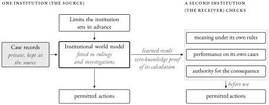
Figure 1. Learning in one institution and adoption in another. One institution fits a model to its own case records. Only the learned result and a proof of its calculation cross to a second institution, which checks the result against its own rules and the cases it has before use.
1. Introduction
A rule tells a bank to establish who its customer is. It does not say which documents to accept, whether to test that a live person is present, or when to investigate further. Those choices make up the bank’s procedure, its interpretation of the rule in practice. People who mean to defraud the bank study the procedure. Once they know what a check looks for, they arrange their affairs to pass it. The bank keeps revising the procedure, as rulings settle how the rule applies to a new kind of case and as investigations show what a check missed.
Staff make these revisions. Businesses are starting to act through AI agents, which file requests at any hour and faster than staff can revise a procedure.
A scheme that succeeds against one bank is soon tried against the next. Institutions already share what they learn about fraud through exchanges of intelligence [8], joint detection across payment data [9] and federated learning [15]. Each gives the receiving institution information or a model that it cannot check against cases it never sees. The receiver is left to work out what the model means under its own rules, how it performs on its own customers and what it may do with it.
We introduce Mass, a decentralized network of sovereign execution environments for AI agents. Each environment learns the correct, safe interpretation of its sovereign law, policy and regulation, and so keeps pace with fraud and bad actors on its own. Each environment decides locally whether to use lessons received from others (Figure 1).
Each institution runs one environment, a sovereign virtual machine, which holds its authoritative records and checks every request to change them against its rules. Its institutional world model is fitted to the institution’s own rulings and investigations. The machine consults it when it decides how the rules apply to a new request. The companion paper [1] develops the machine and the network. This one is about how the machine learns.
Carol is buying a company from Alice, its majority shareholder, for 100 units set aside at a bank. Her AI agent asks the company registrar to record her as owner of Alice’s shares and to have Alice paid (Figure 2). One person controls the holding companies through which Carol and Alice act. The registrar’s rule requires the minority shareholders’ consent before some transfers, depending on how buyer and seller are related, and does not say whether common control makes the consent necessary. This registrar has never decided such a case, while a registrar in another jurisdiction has decided eight and required consent in seven.
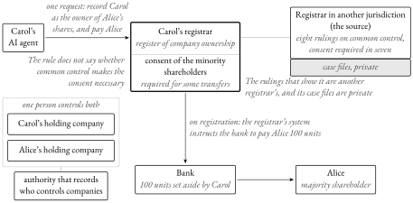
Figure 2. One purchase, two registrars and a bank. Carol’s purchase and the institutions it involves. The rulings on consent are another registrar’s, and its case files are private.
2. What the model learns
The machine that checks each request keeps, for every request it admits, the rule and the exact procedure under which it was admitted, and later what came of it. A fraud detector learns from such outcomes that a pattern of behavior is bad. The world model traces the pattern back to the procedure that let it through, and behind the procedure to the rule that left it open (Figure 3).
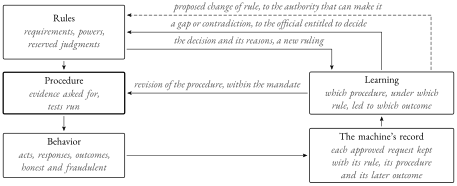
Figure 3. Rules, procedures and observed behavior. The institution supplies the rule and adopts the procedure, and each admitted request is kept with both and with its later outcome. Learning revises the procedure. A change to the rule goes to the authority that can make it.
To keep every step open to proof, the learner in the worked example sorts cases into categories and counts. The registrar in the other jurisdiction has made eight rulings in each of three categories. For a category of transfer with rulings, of which required consent, the weight is , the share that required consent computed as if the category had begun with two imagined rulings, one each way (Lemma 1, Appendix B.3). Ordinary transfers, with none of eight, have weight , transfers under common control, with seven of eight, have weight , and nominee transfers, with four of eight, have weight . For Carol’s registrar, which has no ruling on a transfer under common control, that kind has weight .
3. From a weight to a decision
A weight decides nothing until the registrar that uses it says what its machine does with it. A correct interpretation applies the rule as the institution’s own authorities apply it, following their rulings and leaving what they leave open to the official entitled to decide it. Under the procedure Carol’s registrar has adopted for its consent rule, with thresholds it chose, the machine requires consent when a kind of transfer has weight or above, asks for none when it has weight or below, and refers anything in between to that official.
On its own record Carol’s request goes to the official, because her kind of transfer has weight there. The official’s decision, recorded with its reasons, would be this registrar’s first ruling on common control. The other registrar’s would require consent, but nothing has yet made that weight part of this registrar’s procedure.
5. Testing a lesson before use
Weights computed as declared may still not suit the receiver’s cases. The source’s categories must correspond to the receiver’s, since a weight for common control may summarize a relationship that the receiver’s law treats differently. Performance can differ too. A fraud detector that flags 90% of frauds and 1% of honest requests is right in 10 flags of 11 where one request in ten is fraudulent, and in 10 of 121 where one in a thousand is. A correctly signed model can also be wrong outright, through mislabeled cases or a planted error [6].
A receiver can test a model’s performance on its own cases. A finding says what an investigation established about conduct, for instance that a payment was part of a fraud. The test may keep the scores of the source’s fraud model, blend them with scores fitted to the receiver’s own findings, or replace them, whichever costs least on the receiver’s cases.
A lesson is worth most to a receiver that has not yet met the scheme, which is the receiver with the least to test it with. On its own recent requests it can count how many the detector would hold. What the detector catches it has no way to test until its first finding of the scheme, and waiting for that finding gives up the protection the lesson was for. The receiver’s governing body can permit a bounded trial, with a review, an expiry date and a cumulative limit on the burden imposed, each fixed in advance (Appendix C.3).
6. Adopting a model from elsewhere
Carol’s registrar can rely on the other registrar’s weights only under its own rules, which, with any treaty in force, must permit the consequence it attaches to them. The companion paper calls such reliance selective recognition. Adopting the weights into the procedure is a further act. So is each refit of the registrar’s own model as its official’s decisions become rulings and as fraud changes, which is the machine’s continual learning. Each adoption or refit changes what the machine permits and must itself pass the check [3]. If every adoption or refit waited for the registrar’s governing body, an agent could exploit a known gap until that body next met.
The registrar gives a mandate in advance for the revisions of its procedures that may take effect on their own. The mandate names who may supply a model, which changes are allowed and how many adoptions it authorizes per period, such as one refit a day. Any other change, including one to the mandate itself, needs a decision by the authority entitled to make it.
Limiting each update separately would achieve little, since a threshold that may fall by 0.01 per update crosses its whole range in a hundred updates. The mandate limits running totals of the burden placed on applicants, of cost and of the number of updates adopted. The machine keeps them outside the model, where no update can reset them. When they are spent the registrar has to renew the mandate.
In the worked example the mandate authorizes one adoption, which the registrar uses on the other registrar’s weights. Like the receiver in Section 5, it has no ruling of its own on common control to test the lesson on. The mandate permits adoption, so the registrar takes that risk and treats the two registrars’ categories as the same. A transfer under common control now has weight at Carol’s registrar too. Her request, which would have gone to the official, waits for the minority’s consent.
7. Correcting a lesson
Suppose the authority that reviews the source’s rulings then reverses six of the seven that had required consent. Carol’s file mentions none of them. Her wait rests on the machine’s recorded answer for her request. The answer was computed under the registrar’s procedure, the procedure uses the source’s weights, and the weights were fitted to those rulings (Figure 5).
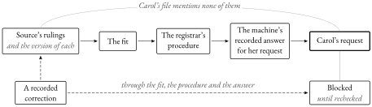
Figure 5. A correction travels through what was derived. Dependence runs from the source’s rulings through the fit, the registrar’s procedure and the machine’s recorded answer to Carol’s request, and a correction follows the same path.
The machine records, for every model, procedure and answer, what the item was derived from, down to the version of each ruling. When the registrar records a correction, the machine blocks everything that may depend on the corrected ruling from supporting any further change to the records. The block reaches models verified but not yet adopted, and any model later derived from the corrected ruling, so renaming or re-deriving a model does not escape it. It holds whether or not a replacement exists. A blocked decision can be relied on again only after it has been rechecked, by a fresh answer under a current procedure, by a showing that the correction leaves it unaffected, or by a decision of the authority entitled to decide. A correction leaves completed transfers in place, along with any payment the bank may still make.
The block begins when the registrar records the correction. Until the notice arrives, its records are the same whether the ruling stands or has been reversed. Anything stronger has to come from the terms on which the source shares, such as a bound on the delay of notice.
For Carol, the six reversals are recorded and the answer she is waiting on is blocked. A reversed ruling counts the other way. With one ruling in eight now requiring consent, the weight falls from to . The source issues a new signed list with a new proof, which the registrar verifies. The registrar renews its mandate, whose one adoption is spent, before the machine adopts the new weights. Her request stays blocked, because adopting a model is not a recheck. When the machine answers her request afresh, the answer is “no additional consent” and the registration can proceed. The first adoption has cost Carol a wait for a consent that the corrected weights do not ask for.
8. Duties already owed
Carol is now the registered owner, but Alice is still to be paid. After polycentric consensus has joined the registrar and the bank in one recorded decision, the registrar’s machine records the payment as owed until the bank’s evidence shows it was made. The steps that remain, such as recording the bank’s confirmation, are changes the machine must still admit under the procedure then in force. Suppose the registrar meanwhile adopts a new fraud detector, the detector flags Alice, and the updated procedure stops permitting those steps. Alice’s payment can then no longer be completed (Figure 6).
Alice may be a fraudster. A flag is only a score, though, and whether to stop a payment that an authorized act created is for the authority over that duty to decide. When a competent authority does revoke the permission on which the only lawful payment depends, the revocation takes effect and the duty stays on the record as unmet.
An update must not make the payment impossible when nobody has decided to stop it. Before the machine adopts a procedure it asks whether every duty already owed can still be completed under it. For each duty the registrar fixes the goal, the conditions that must hold on the way, the deadline, and the ways the bank may respond to each step. No model can alter them. The machine works backwards from the goal. It marks a state when some permitted step reaches an already marked state under every declared bank response, preserving the duty’s conditions throughout. From every state it marks, the duty can be completed (Theorem 1, Appendix E). If Alice’s payment stands in a state the new procedure leaves unmarked, the machine refuses the adoption.
Passing this check at every update is still not enough. Suppose the payment can stand in either of two states before it is made. One procedure permits a step from the first state to the second and then payment. Another permits a step from the second back to the first and then payment. Under either alone Alice is paid. If the registrar switches procedure after each first step, the payment moves between the two states for ever.
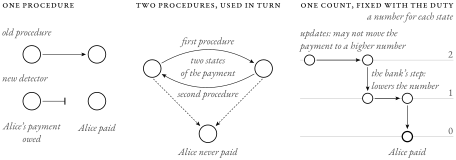
Figure 6. Completing a duty under one procedure and through changes of procedure. Left: a new detector removes the step the old procedure permitted. Center: alternating between two procedures that each permit completion never reaches it. Right: one count fixed with the duty, which updates may not raise and the bank’s steps lower.
The registrar needs a count of progress that belongs to the payment and stays the same under every procedure. When the payment becomes owed, the registrar fixes a number for each state the payment can be in, a limit on the bank’s steps still needed from there, with zero once Alice is paid. Here the first procedure’s backward check gives the first state number two and the second number one. The machine adopts a procedure only if the payment’s number stays the same or falls on adoption, and every step of the bank’s service that the procedure permits ends at a lower number. The second procedure fails, because its step back raises the number from one to two. Provided the bank completes a step within every changes to the records, a payment starting at number completes within changes (Theorem 2, Appendix E). That needs the registrar’s own updates to leave the bank room, so the payment carries an allowance of adoptions that may affect it, which neither a service step nor a renewal of the mandate refills. Without it, administrative activity could postpone the payment indefinitely while every individual procedure still permitted it. The bound counts changes. The payment’s deadline rests on a clock that the machine carries through every adoption and renewal.
The firm that runs the registrar’s machine may be replaced while Alice’s payment is pending. Its successor takes over the clock, the instruction to pay, the weights and the pending corrections. Running the machine gives the successor none of the registrar’s or the bank’s powers.
9. What is proved
An interpretation is safe when acting on it passes the machine’s check in full, so that the authority to act is current, every ruling it rests on still stands, and every duty already owed can still be completed. Theorem 3 (Appendix F) assumes that every change to the records passes the machine’s check, that each check and the change it permits form one indivisible step, that the checks of procedures, of inference and of dependence accept nothing false, and that sources and services keep their terms. Then, in whatever order the changes arrive, every procedure in force was authorized under the rules in force before it, a decision that relies on a corrected ruling is used only after a recheck, and what was done and what is still owed stay on the record. That gives the first two parts of safety, the second from the moment a correction is recorded. Theorems 1 and 2 give the third under the conditions on procedures, updates and bank performance in Section 8.
10. Comparing procedures
The record lets the model report that one way of carrying out a rule has let more fraud through, or held up more honest work, than another. Such a report shows an association, and the design has four ways of establishing that the procedure caused the difference; one comparison is worked through by arithmetic (Appendix B).
Appendix A. The machine, its model and the mandate
The appendices give the design at full length and the machinery behind it, in the order of the body, with the exact statements, the proofs and the constructions. Where the body uses an ordinary phrase, an appendix sometimes fixes a name for the same thing, set in bold where it is defined, and later appendices use those names. Appendix J lists the results.
A.1. The machine’s check
Every mechanism of the design acts at one place, the point where an institution’s records change. A registrar’s authority lies in its register: the owner of a company’s shares is whoever the register names. A bank’s ledger and a regulator’s file of licenses work the same way. A sovereign virtual machine holds such records for one institution, and every change to them goes through it. An agent that wants a change submits a request stating it: record Carol as the owner of these shares. The machine checks the request against the institution’s rules and powers and gives one of three answers (Figure 7). It can admit the request: it makes the change and records the decision with its reasons, and we call the change admitted. It can hold the request: the request stays open, nothing changes, and the machine names what it is waiting for, such as a consent, a document or an official’s answer, and by when. Or it can refuse the request, which ends it, and state the ground.
The check is applied to the change itself. It is therefore the same whether the request was prepared by an agent built on one AI model, by an agent built on another, or by a person: changing the agent changes what is proposed and leaves what is permitted as it was. The institution’s own model is a different matter. It is part of the check, so installing a new version of it does change what is permitted, and that installation must itself pass the check, as must administrative tools and imported data. A check with no exceptions is called complete mediation [3], and every guarantee in this paper assumes it.
An admitted change can leave work outside the machine. Carol’s purchase needs two institutions, since the registrar can register Carol and only the bank can pay Alice. In the companion paper, polycentric consensus joins the institutions an act requires, and no others, in one recorded decision: the act goes ahead only if every one of them admits its part, and the decision can be recovered after a failure. A decision to go ahead does not finish the act. The transfer is registered and the instruction to pay Alice is with the bank. Until the bank’s evidence shows the payment made, the registrar’s machine records the payment as owed and the instruction as one that can still be carried out. This state is ordinary, and it can last.
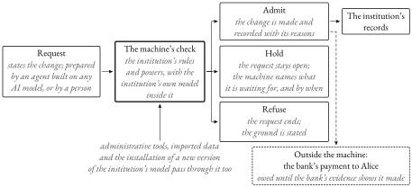
Figure 7. The machine’s check and its three answers. Every request passes the machine’s check before the records change, whoever prepared it. The machine admits, holds or refuses, and an admitted change can leave a duty outside the machine.
Some of the machine’s checks are settled by looking at its records: whether Alice is the registered owner of the shares is a fact in the register. Whether common control makes Carol’s purchase a transfer that needs consent is a different kind of question. Its answer depends on how the rule has been applied to cases like hers, so the machine has to learn it from those cases.
A.2. Learning from cases
Rules, procedures and behavior. The rule that a bank must know its customer left the bank’s procedure open, and two procedures that satisfy it can differ in the fraud they let through and in what they cost honest business. An institution therefore has something to learn at three levels (Figure 3). Its rules state requirements and powers and reserve certain judgments to named officials. Its procedures say how a rule is applied to a particular act: which evidence is asked for and which tests are run. Behavior is what follows: legitimate activity, attempts to get around the procedure, and the responses of the banks and other outside services that carry the procedure out. Behavior shifts daily and nobody decides it. A procedure can be revised by the institution that adopted it. A rule changes only by the act of whoever has the power to make it.
The machine keeps with every act the rule and the exact procedure under which the act was admitted, and later what came of it. From that record the institutional world model learns at all three levels: for each outcome, which rule governed the act and which procedure, under that rule, admitted it. A fraud detector learns that a pattern of behavior is bad. The world model traces the pattern back to the procedure that let it through, and behind the procedure to the rule that left it open. It can then report that one way of carrying out a rule has let more fraud through, or held up more honest work, than another. Appendix B.4 gives the evidence that separates such an association from a cause. The two effects often move together, since a procedure that lets more honest business through may let more fraud through as well, and how much of each to tolerate is the institution’s decision.
What is learned at each level changes a different thing. Learning about behavior and procedure can revise the procedure, within the standing mandate of Appendix A.4. Learning that points at the rule becomes a proposal to whoever can change the rule. A gap or a contradiction in the rules becomes a question for the official entitled to decide it, and the official’s decision, with its reasons, is a new ruling for the model to learn from (Appendix A.3). Law usually changes after something has gone wrong, while here the machine that checks each act also keeps what it was admitted under, so procedures can follow what is observed, one revision at a time.
Rulings and findings. Two kinds of record carry what the institution learns, and they teach different things. A ruling records how an authority applied a rule to a case: this transfer required consent. A finding records what an investigation established about conduct: this payment was part of a fraud. From rulings the institution learns how its rule applies, which is Carol’s question. From findings it learns which patterns of conduct turned out to be fraudulent. A resolved dispute is also a ruling. It names the rule, the procedure that admitted the act, what went wrong and the reasons for the resolution. Its evidence, the precedent relied on, the verdict computed in advance with its reasons, any argument made for a different verdict and the outcome are all inputs to what the model learns.
A ruling governs its own case. It governs other cases only as far as the deciding authority, or the institution’s own rules of precedent, say it does. The record of a reasoned ruling can therefore carry, with the provision, the facts found, the answer, who decided and its status, a scope the authority has stated. The scope is a condition, in the machine’s own observations, that the authority confirms is enough for the ruling to apply. The facts a decision turned on are useful short of that. They find comparable cases, and they let the machine propose a finer way of sorting cases, or propose a scope for the authority to confirm. Such a proposal takes effect only by adoption under the mandate, like any other change to how cases are sorted. The facts may be named by the official when deciding, or drawn from the written reasons by a machine and confirmed by a person entitled to confirm them. A resolved dispute tells the institution what to look for.
The institutional world model. The institutional world model is the learned model that turns these records into estimates the machine can use. Fitted to rulings, it estimates how a rule applies to a new request. Fitted to findings, it estimates what is likely to follow if the request is let through. A third record, the machine’s record of completed work, shows what a procedure costs honest applicants: how long a request like Carol’s waited, and whether it was given up. The estimates enter the machine’s check through a procedure the institution has adopted, which Appendix A.3 describes.
In full, the model is the institution’s own fitted and adopted values at three levels. At the level of the rule it holds, for each kind of case, how the rule has been applied, as a score or as a ruling that governs. At the level of procedure it holds, for each rule, what each permitted procedure and each combination catches that the others miss, what passes all of them, and what each costs honest applicants. At the level of behavior it holds a fraud score for each kind of case, and detectors of several conditions, the institution’s own and those received. The mandate’s running totals, the record of what was derived from what and the status of each ruling are no part of the model. The machine keeps them outside it, where no update can reset them. The worked examples have one thing at each of the first two levels, both on the consent rule: the consent weights below, and the two checks of Appendix B.6.
The design does not depend on the kind of learner. To keep every step open to proof, we use the simplest one that shows it: it sorts cases into categories and counts. Fitted to rulings, it answers Carol’s question. Fitted to findings, it gives a fraud score for each kind of case.
Take the consent rule at the registrar in the other jurisdiction, which we call the source. It sorts ownership changes into three categories: an ordinary transfer, a transfer between parties under common control, and a transfer involving a nominee or custodian. It has decided eight cases of each. For a category with rulings, of which required consent, the learner’s weight is
[ . ]
The weight is the share of rulings that required consent, computed as if the category had begun with two imagined rulings, one each way. This rule is known as Laplace smoothing, and Lemma 1 in Appendix B.3 derives it from the learner’s loss.
| Category at the source | Rulings | Consent required | Weight |
|---|---|---|---|
| Ordinary transfer | 8 | 0 | |
| Common control | 8 | 7 | |
| Nominee or custody | 8 | 4 |
Carol’s purchase falls in the second category.
A fit returns only what its record holds. Rulings already made do not decide a case of a new kind: two readings of the consent rule can agree on every transfer decided so far and differ on Carol’s, so a question the rulings leave open goes to an official (Appendix A.3). And a record that kept each verdict without who controlled the parties could not say which rulings were about common control, so the machine keeps the links its questions depend on. Appendix B.3 states both limits exactly (Propositions 1 and 2).
The source’s model gives common control a weight of . The weight is a number, and a registrar still has to say what its machine does with it.
A.3. From a weight to a decision
The adopted answers. A registrar adopts a procedure for the weight. At a weight of or below, no additional consent is needed. At or above, consent is required before the transfer is registered. Between the two, the question is referred to the official who decides such cases (Figure 8). An ordinary transfer, at , therefore needs no additional consent. A common-control transfer, at , requires it. A nominee transfer, at , is referred. So is any category with no rulings, which also has weight . Under this procedure a request like Carol’s is held: it stays open, the transfer is not registered, and a clock starts on the wait for the minority shareholders’ consent.
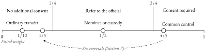
Figure 8. Consent weights and the adopted answers. The fitted weights of the three categories, set against the adopted thresholds and . The six reversals of Appendix F.1 move common control from to .
The thresholds are the registrar’s choice, and choosing them is an exercise of its authority. The fit summarizes rulings already made, and the adopted procedure gives that summary a consequence for the next request. The answer would change if the way cases are sorted into categories changed, or the thresholds, or the code that computes the answer. What the institution adopts is therefore the whole package, and we call it the adopted procedure. When we speak of adopting or updating a model, the package is meant. Its answer settles the consent requirement alone, and the transfer must still pass every other check the machine applies (on combining several results, see Appendix H).
A score has no more authority than the institution gives it. Predicting that an official would approve does not confer the official’s power, and a high fraud score is not a finding of fraud. An institution can attach a defined protective response to a score, such as a hold for investigation with a fixed duration, a review and a route of challenge. Seizing assets or recording a criminal finding would each need authority of its own.
Questions kept for an official. Some decisions the law gives to a person. A licensing rule may leave to a licensing officer whether an applicant is fit, and a rule of procedure may require a judge to decide whether stated grounds suffice. We call the person or body to whom the law gives a decision the competent authority for it. An institution can delegate routine determinations to its adopted procedure and reserve the others. On a reserved question the machine gives no answer. It records the question exactly, with the request, the case, the rule and the person entitled to answer, and holds the request for that person.
Models may advise. The institution can put a reserved question to several separately trained models and keep their opinions, including their disagreements, for the decision-maker. The official records the decision and its reasons, including the reasons for departing from the advice, and that record is a new ruling from which later fits can learn (Figure 9).
Where several models advise, the design lets their proposals be scored against officials’ decisions made without sight of the advice, by type of question.
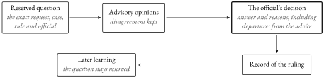
Figure 9. A reserved question. Advisory opinions inform the official’s decision on the exact question. The recorded decision supports later learning, and the question stays reserved.
New rulings can carry a category across a threshold, and the procedure then operates as adopted. A reserved question does not move in this way. However often official and model agree, the agreement delegates nothing, and a question the law reserves stays with its official after the model changes. Appendix G.1 follows one contested case through this path.
An adopted procedure answers the requests of its day. New rulings arrive and fraud changes, and the scores should follow. Each revision changes what the institution permits, so each needs the institution’s authority.
A.4. The standing mandate
If every revision waited for the body that governs the institution, the machine would learn at the pace of that body’s meetings, and an agent could exploit a known gap until the next one. If no revision needed authority, the model would be rewriting the institution’s procedures by itself. The standing mandate resolves this. It is a decision taken in advance, by whoever has the power to adopt the institution’s procedures, about which revisions may take effect on their own.
A mandate says who may propose updates and which changes are allowed. It can let the procedure change which cases are sent for further evidence while reserving any final refusal to an official, or permit an emergency block subject to review and expiry. It also fixes the test that every update must pass before it takes effect: the update comes from the authorized proposer, stays within the allowed changes and the mandate’s limits, rests on no ruling under correction, and leaves every duty already owed capable of completion. Appendices F.1 and E.1 supply the last two parts of that test. An update that passes is installed and takes effect with no further human decision. A change outside the mandate needs an explicit adoption by the authority entitled to make it, and a proposed update cannot alter the criteria for its own adoption.
A limit on each update does not limit a sequence of updates. A threshold that may fall by at most 0.01 per update crosses its whole range in a hundred updates. An update that may burden at most one percent of applicants can burden all of them in time if the affected group rotates. A hold that has run its full length can begin again under the next model, whose new name hides that it is the same hold. The mandate’s limits are therefore running totals, and the machine keeps them outside the model, where no update can reset them. It keeps the burdens imposed on applicants, the costs, what has been disclosed from the institution’s records, and for each case a clock that runs from the case’s original start (Figure 10). The limits are stated on consequences, because a bound on how far the scores may move does not bound the decisions that result.
The number of updates is itself one of the totals. A mandate authorizes a fixed number of adoptions, so the authority given in advance runs out and the institution has to decide again. When this cap is reached, further updates wait until the institution renews the mandate, and whatever has been spent in burden and disclosure stays spent across the renewal (Appendix A.7).
How many adoptions a mandate authorizes is the authority’s to set. A mandate can authorize one refit a day for a year, each passing the same test, so a counted number of adoptions does not hold learning to the pace of a governing body’s meetings.
An action that the mandate limits, such as a hold or an investigation, is admitted only if its worst permitted cost fits the running totals, and that cost is set aside when the action is admitted and settled when its outcome is known. A total that is charged only when outcomes arrive can be overspent in the meantime. Appendix C.4 says what is proved, and for which operations.
Running totals bound what a sequence of updates may cost. They do not make it settle, because the procedure in force changes the behavior it measures. If people respond to a predicted rate of fraud by producing the opposite rate, exact refitting alternates between and without end, although each fit is optimal for the data it saw. Whether repeated updating settles depends on how the population responds [4] (Appendix B.4).
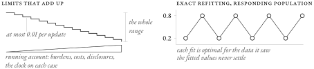
Figure 10. Limits that add up, and a population that responds. Left: one threshold over successive updates, each within its limit, above the running account. Right: fitted values that alternate between 0.2 and 0.8 as the population responds.
The mandate covers procedures and stops at the rule. Because each act is kept with the rule and procedure that admitted it, the record of completed work can be grouped by procedure, and where it supports a better procedure under the existing rule, the mandate can authorize the institution to test one. Where the evidence points at the rule itself, the institution puts the proposed change, with the alternatives and the uncertainty, to the authority that can change the rule. The same record serves the institution’s own deliberation: it can see which procedure admitted a case and weigh a proposed revision by the harm it prevents and the honest work it completes, while what each participant sees of that analysis stays controlled.
A.5. The adopted procedure and the assessment
Institution adopts the procedure
[ B_{i,v}=(,F,C,P,R,U;E), ]
where identifies the version.
| Component | What it fixes |
|---|---|
| Learned parameters, also called weights (in this paper, the consent weights and fraud scores) | |
| The rule that sorts a case into a category, or feature extraction | |
| Calibration: the interpretation of scores and uncertainty | |
| The mapping from interpreted outputs to consequences | |
| Inference semantics and reproducibility | |
| Permitted uses: the purposes for which the procedure may be applied | |
| Training cutoffs, parents in the derivation and evidence of assurance |
A changed sorting rule can move a case to another category, and changed thresholds or a changed interpretation of scores can alter its consequence, which is why the whole package is adopted together. The context holds the institution’s current rules, powers, procedures in force and standing mandates. In the private construction of Appendix D, is the category encoding attested by the source. A candidate is a proposed replacement procedure.
A source cutoff fixes the revisions and observations available from a source. A training cutoff fixes the observation time and the rule of eligibility that select records for fitting. The record of a fit binds both, with the objective, the labels accepted, the missing labels excluded, the meanings of the features and the parameters.
When the machine applies the adopted procedure to a request it records an assessment. The assessment binds the actual procedure, the source cutoff, the exact material retrieved and the time of retrieval, the features extracted, the case, the purpose and the output of inference. It is an answer about one request under one procedure. The machine either computes the supported inference or verifies a proof of that exact relation, and it rechecks current authority and dependencies before it commits a change. A change to preprocessing, weights, calibration, thresholds or retrieved material requires reassessment. Alternatively, a checked correspondence can establish that the earlier result remains valid for the exact present use, and the Reuse change of Appendix F.5 records that correspondence (Figure 11).
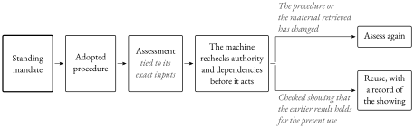
Figure 11. An assessment and its two continuations. An assessment is tied to its exact inputs, and the machine rechecks authority and dependencies before it acts. If the procedure or the material retrieved has changed, the request is assessed again, or the earlier assessment is reused under a checked showing that it holds for the present use.
A.6. The machine’s answers and outside services
Throughout, the terms recorded for a source, a service, a release or an adoption state the inputs, the behavior promised, the permitted uses and the handling of failure. They say what another part of the system may rely on, and the institution’s rules or agreements supply the authority for that reliance.
One learned output can be read in three ways, and each rests on a different basis.
| Reading | What the output is | What it rests on |
|---|---|---|
| Prediction | An estimate, with its uncertainty or range | Observations and a declared statistical method |
| Interpretation | The application of a named rule to a case | Adoption by the competent authority, precedents and reserved decisions |
| Decision | A permitted change, a hold, a question or a refusal | Current authority and the complete check of the request |
One model, whether a neural network or the counting learner, can serve in all three readings, and the basis has to be established for each. An adopted threshold can trigger a hold for investigation, for which the authorizing procedure fixes the action affected, the duration, the review and the route of challenge. Seizure, a criminal finding or a step that interferes with another remedy already under way would each require its own authority.
For a request, the machine assembles the effect requested, its authority, the evidence and resources required, the dependencies and the unfinished duties. A request usually faces several requirements at once, of which sanctions screening is one, and Appendix H gives the conditions under which their results combine. For a specified request, context and use, the adopted procedure returns one of
[]
Permit identifies the effect , the supporting evidence and the continuation , which records unfinished work and the conditions for resuming it. Hold gives its basis , the pending question and the deadline . Refuse gives its basis and its scope . These letters are local to this display. The procedure in force determines when each answer is available.
An outside service such as a bank acts under terms that state its authority, its promised behavior and its timing. For each instruction, the terms state which observations establish performance and which rule out any remaining performance. The machine keeps the instruction and its exposure, the amount the instruction could still move, for as long as the service can still act.
Some duties arise from the act being admitted. A transfer may create a report due thirty days later, and requiring the report first would obstruct the act that creates it. A hold likewise stops only what it is about: an unresolved application may still allow the submission of evidence, the correction of an identity or the payment of an existing refund.
The record of a decision lets a verifier check the whole of it, including reasons, unresolved questions and continuing duties. Several physical writers may implement complete mediation, provided every change passes the check, and recording a decision supplies no power that was missing.
A.7. The mandate and its accounts
The standing mandate is recorded separately from any procedure, as an authority in the institution’s records. It identifies the competent origin, the updater, the baseline, the allowed changes, the checker, the period and the cumulative accounts. Objectives, weights in the loss, the meanings of labels and consequences all belong in its scope, and the authority that grants it must itself hold the power over every interpretation and use it delegates. A standing mandate authorizes a defined sequence of qualifying updates, and an explicit adoption authorizes one identified procedure. In both cases the authority exists in the current context before the candidate governs later action, and adoption installs the checked procedure and its record in one indivisible step, so that later assessments and changes are tied to the procedure actually installed. A candidate can refer to the mandate but cannot change the criteria that authorize its own adoption, and changing the mandate requires competence in the context that precedes the change.
The machine’s checker and accounts for updates persist outside the procedure. Over the mandate’s period they keep the authorized baseline, the accumulated burdens, costs, disclosures and exposure, and the clock on each case, which measures elapsed time from the case’s original start and keeps its deadline through updates. A bound on changes to the weights controls an engineering quantity, and controlling an institutional consequence also requires a bound on the resulting decisions or effects. The allowance of adoptions falls by one with each adoption while the lifetime count rises by one, and it is enlarged only by a successor mandate authorized in the exact context of its predecessor.
A renewal declares the changes to future scope, objectives, baselines and limits of expenditure. It carries forward the corrections recorded for each source and their status, the lineage of models, the completed acts and the instructions that can still be carried out. Disclosure, risk and burden already incurred remain spent. A competent renewal may enlarge future allowances, and its accounts must keep past expenditure and state the resulting total for any lifetime guarantee it changes.
An existing duty keeps its goal, its conditions of safety, its original deadline and the checked certificates of its permitted routes to completion, and it carries the allowance of Appendix E.1.
Appendix B. Records, access and what a record can show
B.1. Access, reporting and views
Learning starts from the authority to obtain a record and to analyze it. Appendix C.1 describes the two routes by which information reaches another institution. Where a company’s agreement supplies the authority for access or release, the grant names its limits, and statutory grounds are recorded separately. The terms of release must cover whatever can be inferred from the released result, and the recipient may be a government body, a regulator or another institution’s machine.
A report made under a reporting duty can show proposals admitted, waiting and refused. In an example worked in Sovereign economies on a decentralized network: Technical supplement [20, §P.4], a periodic report covers ten first-time proposals, of which six were admitted, two wait for a consent or a judgment and two were refused for lack of authority. It states its period, the number of proposals counted, the work still pending, the fields it may carry, its purpose and its place in the sequence of corrections. For one refusal it supports a near miss in a specific sense. It identifies the exact unauthorized change that the complete check stops, and a finite counterfactual in which the same change is admitted when the check of current authority alone is omitted. The supervisor thus learns of an attempt that failed, which a register of completed acts does not show. The reporting rule permits a review of the control. Inspecting raw case files and releasing a model each need their own authority.
Within an institution, a view states the records and outputs available to a named recipient for a stated use. An officer of a company may receive the records needed to discharge the office, a supervisor the information required for oversight, and an acting agent the inputs authorized for one operation. Permission for an agent to compute on an input does not by itself authorize onward disclosure to a person or another system. Learning and disclosure are thus governed together: the institution defines the calculation, its permitted uses and the information released.
For example, an authorized internal analysis may find spending inconsistent with an organization’s stated purpose. Its output can justify a referral under an adopted procedure. The signal stays subject to its terms of release and is not a finding. A wider view for investigators requires an admitted change of access that names the competent authority, the determination that triggers it, the records, the recipient, the purpose and the duration. On expiry the access closes under the adopted terms, and duties of retention and of continuing investigation still govern information already obtained.
B.2. What a record states
A consent label records a named authority’s determination under a particular rule, with the authority, the revision of the source and the permitted purpose. A reversal changes the current label and preserves the earlier ruling and its effects. Empirical labels distinguish suspicion, referral, investigation, competent finding and reversal. Refusing a proposal leaves its possible outcome unobserved. A fit uses the records available at a declared date, its cutoff. Missing outcomes, and observation that is incomplete at the cutoff (censoring), are recorded as such, with the investigation that could establish them. Observations can concern applicants, adversaries and the responses of services.
The terms of observation say how labels are obtained: the proposal, the capacity in which the party acted, the objects affected, the policy, the decision, the period over which outcomes were observed and the outcome available. The task determines which relationships among entities, controllers, documents, transfers and times must be kept. The terms of the source name the competent issuer, what it attests, and how corrections and the current state of its records are communicated. Evidence is accepted when it passes these checks on its source, and entering it in the institution’s records is a further admitted change. These conditions keep a label supplied by a competent authority distinct from a conclusion inferred from other observations, and they mark the time up to which an absent outcome is still unknown.
Identity is part of the evidence. A same-person link connects records about one person while keeping that person’s legal estates, the separate pools of assets and obligations, distinct. A same-event link connects records of one occurrence, so that a correction of identity can change which payment a record supports without creating a second payment. What a source asserts stays distinct from what is concluded from it. Authentication establishes who supplied a record and which revision was used.
B.3. Lemma 1, Propositions 1 and 2, and the proofs
The counting learner of Appendix A.2 sorts each case into a category by a declared rule. For a category with rulings, of which are positive, its weight minimizes the penalized loss
[ L()=-(k+1)-(n-k+1)(1-),<<1 . ]
Lemma 1 (Fitted weight). The unique minimizer is
[ =. ]
Proof. The derivative of vanishes exactly when , that is, at . The second derivative is positive throughout , and diverges at both endpoints.
The added units are declared pseudocounts. They fix the estimator. With no observed labels the weight is , so a receiver that sees only the weight cannot distinguish an empty category from one with balanced labels, and the consent procedure refers every category that has weight .
Proposition 1 concerns outcomes that were never observed. A payments office has received 1,000 proposed transfers. It refused 100 and permitted 900, and nine of the permitted transfers were later confirmed as fraud. The office wants the fraud rate it would see if it permitted every transfer. If all 100 refused transfers were honest, that rate is 9 in 1,000, or 0.9%. If all 100 were frauds, it is 109 in 1,000, or 10.9%. The office’s record is the same in both cases, so no method can choose between them from the record alone (Figure 12). The same holds for a rule: two readings of the consent rule can agree on every case decided so far and differ on Carol’s.
Proposition 1 (What history leaves open). Suppose that each proposal has a fixed yes-or-no outcome if permitted, unaffected by which other proposals are permitted and by the policy in force, and that the outcome of every permitted proposal is known by the end of the observation period. Then in the example, a record containing only the outcomes of the permitted proposals identifies the fraud rate under permitting all proposals no more narrowly than the interval . More generally, two interpretations that agree on every recorded case and disagree on a new request cannot be distinguished from that history alone.
Proof. Assign each missing potential outcome the value zero or one. Both extreme assignments preserve every observed label and decision and attain the stated endpoints. For the second claim, the two interpretations give the learner identical inputs and require different answers. A function of those inputs cannot return the required answer in both worlds, and randomization cannot guarantee both answers either.
This is the selective-labels problem [2]. Only new information narrows the interval: an investigation of some refused cases, a permitted experiment, or an assumption the institution can justify. For a rule, the proposition means that history cannot settle a case of a new kind. Settling it takes a source of law, an authoritative example or a decision by the official with the power to make one (Appendix A.3). If proposals affect one another, the counterfactual analysis must also account for changed outcomes among the proposals that were admitted.
Proposition 2 concerns information that was observed and then lost. Two payment histories can have the same number of transfers and the same verdicts while only one of them sends the money in a circle: the histories and have identical counts and verdicts, and only the first has a directed cycle. A record that keeps only counts and verdicts cannot tell them apart. The cycle is a feature to investigate, and a finding of fraud needs further evidence. A stored-value scheme, in which customers buy prepaid balances, gives a second case. Several buyers acquire small balances and load them into accounts linked by a common address or controller. Each purchase passes its own check, and only the links among purchasers and accounts show that the combined activity warrants investigation. To learn from such a case the institution needs those links, the procedures applied and the later finding.
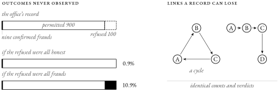
Figure 12. What a record cannot show. Left: the office’s record, completed in the two extreme ways to give 0.9% and 10.9%. Right: two transfer histories with identical counts and verdicts, of which only one forms a cycle.
Proposition 2 (What a summary can answer). Let be what is retained of a history , and let be a declared family of questions. Every can be answered exactly from alone precisely when
[ T(H)=T(H’)q(H)=q(H’)(qQ). ]
Proof. If a function of answers , equal inputs give equal outputs, so the condition holds. Conversely, the condition assigns one answer to all histories with the same retained form, which defines the required function on the image of .
Answering the declared questions in practice also needs an available procedure that computes the answer from what was retained. The machine therefore keeps the links among parties, accounts and transfers on which its questions depend. The institution need not retain every record indefinitely. When a new task needs relationships that were discarded, it must obtain the evidence, change what it records or report that the answer is unavailable. Some tasks need records at the level of a person or an entity, and a model can retain their information after the rows are removed, which bears on release (Appendix D.4) and on correction and handover (Appendix F.7).
B.4. Responses, causes and comparisons
The procedure in force shapes the data from which its successor is fitted. After detection, adversaries may change the form of their transactions, switch intermediaries or manipulate the learner’s inputs, and legitimate applicants may adapt to avoid delay. Investigations and corrected findings reveal some of these responses. Write for the data generated in period , for the policy of the procedure in force and for the institution’s rules and powers at that time. Then
[ D_t=D(_{B_t},_t,). ]
Retraining acts on a population that earlier controls may have changed, and even exact fitting can cycle. In the example of Appendix A.4, a deployed prediction induces . Exact squared-error retraining gives , and starting at produces . Each fit is optimal for its population, and the population’s response prevents convergence. Performative prediction supplies conditions under which retraining converges [4]. Applying them requires evidence about the map of responses and about the loss. Convergence also has to be connected to the institution’s objective, and the next assessment of a procedure must include the burdens already imposed on legitimate work.
History can leave an improvement unidentified even without such feedback. Suppose two equally common types of applicant have historically received actions zero and one, with success rates of 20% and 80%. Two models fit this record. In one, action one succeeds at 80% for both types. In the other, it succeeds at zero for type zero and at 80% for type one. Always choosing action one gives 80% success under the first model and 40% under the second, and both reproduce the historical baseline of 50%. Telling them apart takes further assumptions, or information from an investigation or experiment that a competent authority has authorized.
Grouping confirmed outcomes by the rule and procedure that admitted them (Appendices A.2 and A.4) establishes associations under the terms of observation. In the identity example of Section 1, the bank can compare a procedure that checks a passport with one that also asks for a live response only after specifying what each check establishes and which outcomes count as mistaken admission, unnecessary refusal or delay, and where the law prescribes particular documents or tests, those requirements are fixed conditions of the comparison. In the stored-value scheme of Appendix B.3, the institution can examine the combination of purchase and account-loading checks that let the linked acts through, and learning may support a new joint check, a changed request for evidence or an investigation. Different applicants may have used different procedures, investigations may be selective and adversaries may adapt to a new check, so Proposition 1 and the two examples above apply to such comparisons. Evidence from other institutions can suggest procedures worth examining, including where a numerical description of legal systems suggests a candidate, and the three checks of Appendix C.2 still govern the comparison. Figure 13 follows the path from grouped outcomes to a revised procedure or a proposed rule.
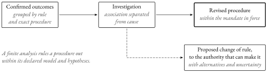
Figure 13. From outcomes to a revised procedure or a proposed rule. Confirmed outcomes are grouped by the rule and exact procedure that admitted them, and investigation separates an association from a cause. A revised procedure follows the mandate in force. A proposed change to the rule goes to the authority that can make it. A finite analysis rules a procedure out within its declared model and hypotheses.
A comparison must fix its population, outcome, baseline and horizon. Weakening the consent requirement could raise the immediate pass rate while changing the task, and the relevant outcome may be ownership changes correctly completed, with the consent and documents required, by a specified deadline. Holds reserve resources, consume investigation time and may delay an existing obligation, so evaluation counts prevented harm alongside abandonment, false refusal, loss to fraud, cost of investigation, delay and unfinished duties. Better evidence can sometimes improve detection and legitimate completion together, so the paired outcomes are measured under stated conditions and neither is assumed to worsen as the other improves. Consent, lawful local practice, cost, delay and correction each need their own definition of the task and their own evidence. Authority to adopt, correct implementation, evidence of improvement and acceptance of a trade-off are separate judgments. A changed objective must be identified as a change, and excluding difficult applicants cannot establish an improvement for the original population. Continual updating also needs separate evaluation where the quality of prediction on earlier tasks must be retained.
For a declared set of candidates, an institution can compare the harm and the legitimate work attainable under each procedure, with the uncertainty in those estimates. The competent authority supplies the objective, the tolerances the law makes available and the limits on burden. Computing the consequences of several choices can inform deliberation without authorizing any of them. A community considering specified institutional options under its governing process can use the same method, and the choice and its authority remain with that process.
A finite analysis can establish that no procedure meets a set of requirements within its declared model of states, actions and responses. An unsuccessful search establishes only that the search found no satisfactory procedure, and a claim about every lawful procedure needs a proof covering that larger class. Interactions among rules can also expose incompatible requirements or a reserved judgment. The institution then records the particular conflict or unresolved question and the authority needed to resolve it.
B.5. Four ways of comparing procedures
A comparison of procedures from grouped outcomes is an association (Appendix B.4). The design has four ways of getting further evidence, and each answers a different question. Each needs the permission of the institution’s authority, which approves the rule of selection, its scope and its limits.
Running a check over requests already recorded, each on the evidence as it stood on its day. This shows what the check would have answered on every recorded request whose evidence was kept as it stood, a request refused at the time included. Joined with later findings, it shows which known harms and which requests later found honest the check would have flagged. It needs the evidence kept with the date it became available. It cannot show what would have become of a refused request had it been admitted, what the check would have cost in delay or abandonment had it run in service, or what applicants would have done.
A second permitted check on a share of requests chosen by lot, run as well as the standard check, with the request decided by the stricter. Nobody in the sample is checked less than the standard. This shows, for the requests that were submitted and sampled, what the two checks flag together and what each flags that the other does not. It needs each check run with only its own inputs and blind to the other’s result. It needs a sample chosen after the request is complete, by a draw the applicant can neither predict nor influence. And it needs flags that are confirmed, with a withdrawal recorded as its own outcome. It cannot show what either check would cost in delay or abandonment if it ran alone, what the finding would have been on a request withdrawn before one was reached, or how applicants would behave if the second check became the standard.
A change of procedure introduced across queues or offices, in an order chosen by lot and fixed in advance. This can show an effect of the change as deployed, for a quantity the institution names before it starts: which offices, over which period, and whether each office or each request counts once. Whatever calculation is used has to take account of the chance the draw gave each office of changing when it did, and has to treat an office as one unit, because requests at one office are not independent of one another. A plain comparison of the average over changed requests with the average over unchanged requests is not such a calculation, even within one period and with every request kept. Where offices differ in volume, or in what they were like before, it can show a difference where the change did nothing. The offices must not share capacity or applicants. The comparison shows nothing once every office has the change, and nothing about the effect after every applicant has adjusted.
An audit of a random share of what was admitted, and of what was refused or withdrawn, from capacity nothing else may use. This estimates how often an outcome that a review can establish occurs in each group: among admitted requests, harm a review can find, and among refusals and withdrawals, applicants a review can show to have been honest. Reviews that reach no finding, and people who cannot be reached, are counted and reported as such. An audit of admitted requests alone cannot tell whether those refused were dishonest or honest.
B.6. A worked comparison on the consent rule
The consent rule does not say how common control is to be established. Four procedures satisfy it: accept the parties’ declaration, check both parties against the control register, trace the purchase money at the bank, or require certified evidence from a third party. Take 1,000 transfers of which 30 conceal common control so as to pass as ordinary transfers and avoid the minority’s consent. This is where fraud sits in the running example.
Suppose the register check and the money trace are both run on the same transfers. Suppose also, for the illustration, that the two miss independently for a given way of concealing. The 30 concealed transfers then divide on average into 11.0 caught by both checks, 5.0 caught by the register check only, 9.8 caught by the money trace only and 4.2 caught by neither. On the same transfer, what one check misses is what only the other catches plus what neither catches, so the register check alone misses 14.0 and the money trace alone 9.2.
| Procedure | Concealed transfers registered without consent, of 30 | Honest-days of delay per 1,000 transfers |
|---|---|---|
| Accept the declaration | 29.2 | 0 |
| Register check | 14.0 | 630 |
| Money trace | 9.2 | 1,261 |
| Both checks | 4.2 | 1,261 if run side by side, 1,892 if one follows the other |
| Certified evidence | 3.7 | 4,850 |
The two cheaper checks together let through nearly as little as certified evidence, at between a quarter and two fifths of its delay, and once both can be run the money trace alone is never the best choice. Which row to choose depends on how many honest-days of delay the institution holds one concealed transfer registered without consent to be worth. Accepting the declaration is best below 41. The register check is best from 41 to 64 if the two checks can run side by side, or to 129 if one must follow the other. Both checks are best from there to about 8,400, or about 7,000. Certified evidence is best above that. The choice is the institution’s and never the model’s.
Most of what the money trace catches and the register check misses is nominee arrangements, 6.8 of the 9.8. The register check is therefore the way of carrying out the rule that lets nominees through, and the rule itself never said that a registered controller might be a nominee. That observation is a proposal to the rule’s author.
How long it would take to tell two checks apart. Delay and abandonment are seen on every request, so differences in them show quickly. A difference in rare harm takes many more requests. One planning figure on this example shows how many. To show that the money trace stops more than the register check takes about 5,300 transfers given both checks (5,291 by the calculation). The figure is for a test fixed in advance, in which the number of transfers is settled beforehand and the results are not looked at along the way. The test is the exact two-sided test, at the 5% level, on the transfers where exactly one of the two checks catches the concealment. It has a four-in-five chance of showing the difference if the true shares are those of this example, in which about 15 transfers in 1,000 are caught by exactly one check and about two thirds of those by the money trace. It also assumes that cases are independent, that every finding is correct and arrives without delay, and that nothing clusters. Under those assumptions a registrar with 1,000 transfers a month that gives one in ten a second check would need about four and a half years (53 months), and one with 2,000 a day that gives one in twenty a second check about eight weeks (53 days).
What pooling needs. Other institutions’ counts can supply the volume only on a stated assumption, that the checks behave the same way on the same kind of case in each place, with each kind counted as often as it occurs at the receiver. In the design, counts are therefore kept by institution and by kind of case, institutions’ results are compared before they are pooled, and they are not pooled where they disagree. Finding no disagreement is not showing agreement, least of all for rare kinds of case where little can be told. A pooling rule therefore has to say in advance how close two institutions’ results must be to count as the same, and what is done where there are too few cases to tell. Two institutions with different mixes of cases can show opposite results for the same two checks.
Appendix C. Sharing and adopting a model
C.1. Sharing a model without sharing the cases
Two lawful routes. The source’s case files stay with the source: they show who owns and controls the companies in its cases. What an institution learns from such records can lawfully reach another by two routes (Figure 14). Where the law imposes a reporting duty, a company or its agent supplies the facts the law specifies to the body the law designates, and that body may learn from the reports within its legal powers. No such duty sends the source’s cases to Carol’s registrar, so the second route applies: the files stay where they are, and what leaves is a result computed from them, a learned model and a proof of how it was computed. The release needs the authority of the companies whose cases they are, or of a statute, and its terms state the recipients, the purposes and any onward disclosure. A company can in this way agree to a defined shared analysis while refusing access to its records (Appendix B.1).
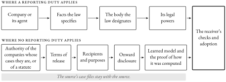
Figure 14. Reporting and private learning. Under a reporting duty, specified facts go to the designated body. Where none applies, the records stay with their custodian and only a learned result and its proof leave.
Proving the fit. The receiver of a model needs to know that the weights are what the declared calculation gives on the source’s cases, on all of them, with no inconvenient case left out. The source cannot show the cases. So the source proves the calculation to the receiver (Figure 4).
First, the source seals each case. For every case it publishes commitments, values that hide the case’s category and ruling and at the same time fix them, so that the source cannot later claim they were anything else.
Second, the source signs the complete list. The case list has one row for each case in the task. A row shows the case’s identifier, its version, when it was observed and whether a ruling is present, and it carries the case’s commitments. By signing the whole list the source gives its word that the list is complete and that each case is encoded faithfully. The receiver verifies the signature with the key it already holds for the source, so a list cannot vouch for itself.
Third, the source proves the fit. A zero-knowledge proof convinces a verifier that a statement about hidden values is true and conveys nothing about the values beyond the statement. The statement here is that each published weight equals for the counts taken over every row whose ruling is present and was observed, in full, by the date the source declares. Those facts are visible on the list, so the receiver works out for itself which rows count and what must be proved, and the source has no choice in the matter. A proof about selected rows would let a source leave out unfavorable ones. This proof runs over the whole list.
Proposition 3 (Private fitting, in plain terms). If the receiver’s verification accepts the signed list, the weights and the proof, then the source holds, behind every sealed row, a category and a ruling such that each case sits in exactly one category with one outcome and each published weight is exactly the declared fit over all the rows that count. This holds whenever the cryptographic tools are sound. Appendix D.2 gives the exact statement, its assumptions and the proof.
The proposition lets the receiver rely on the published weights as the exact result of the declared calculation on the hidden contents of the list the source signed. Whether the rulings were right, whether each case was placed in the correct category, whether the list includes every case that belongs on it and whether the rule means what the source says it means rest on the source’s competence and signed attestation. How the model performs elsewhere is the subject of Appendix C.2.
The construction is specified and proved for a list of up to 256 cases in three categories. The proof is an aggregated Bulletproof [13], and for the 24 rulings it occupies 1,056 bytes.
Proving the answer for one request. A model in use has to answer one request at a time, and there the same difficulty returns on a smaller scale. The answer for Carol depends on the category of her case, and the category is a fact about who controls whom. It comes from the authority that records who controls companies, which is the authority competent to classify her case. The evidence behind it is private in the way the source’s case files are, and Carol’s registrar needs only the answer.
So the classifying authority does for one case what the source did for many. It seals the category of Carol’s case in commitments and signs them. It then proves to the registrar’s machine that an announced answer is the answer the machine’s own adopted procedure gives for the sealed category. The machine cannot run its procedure on a category it does not see, and the proof stands in for that computation.
Proposition 4 (Private inference, in plain terms). If the machine accepts the signed classification, the announced answer and the proof, then the sealed classification selects exactly one category, and the announced answer is the adopted procedure’s answer for that category, for this version of the case, this request and this proposed change. The assumptions are those of Proposition 3, and Appendix D.3 gives the exact statement and the proof.
The machine works out for itself, from its records and from the change proposed, the statement it expects the proof to establish, so a proof made for another request or another change fails. The proof occupies 736 bytes. Both sizes count the proof alone, without the commitments, case lists, public fields and framing.
What the result gives away. A zero-knowledge proof conveys nothing beyond its statement. The statement is published, however, and it contains the weights, and weights can give a case away. If only one case on the list counts, that case’s category shows a weight of or according to its ruling and the other categories show , so the weights reveal both the category and the ruling. Size alone is no protection: the exact average of 500 yes-or-no outcomes reveals the last outcome to anyone who knows the other 499. An announced answer likewise reveals a request’s category whenever each category has a different answer, as it does for Carol.
The terms of release must therefore count the weights, the answers and the visible fields of the list as disclosures. Exact weights carry none of the statistical protection that differential privacy [7] defines. An institution that wants that protection must adopt a randomized release designed for it and keep a running account of everything released (Appendix D.4).
The receiver now holds a model and a proof that it was computed as declared. Neither says whether the model suits the place where it has arrived.
C.2. Adopting a model from elsewhere
Three checks. A model from a source reaches use at the receiver only through three checks, each made for the particular task and for this source and this receiver (Figure 15).
The first is meaning. The source’s categories and labels have to correspond to the receiver’s. The source’s weight for common control may faithfully summarize a relationship that the receiver’s law treats differently. The receiver can adopt a correspondence between the two, keep the question for its own official, ask for more documents or decline the model, and the source carries on under its own procedure.
The second is performance. A model can keep its meaning and change its effect. Suppose a detector flags 90% of fraudulent proposals and 1% of honest ones. If a fraction of proposals are fraudulent, the fraction of flagged proposals that are fraudulent is
[ . ]
Where one proposal in ten is fraudulent this is . Where one in a thousand is, it is : among 100,000 proposals the detector flags 90 frauds and 999 honest cases. The same threshold imposes a different burden on honest business in the two places. The receiver therefore needs evidence from its own population, both of how well the model predicts and of what its response costs. Whether a relationship learned at the source carries over at all depends on how the populations differ, which takes assumptions of its own [5].
The third is authority. The receiver’s rules, and any treaty in force, must permit the consequence it proposes to attach to the model’s output. The companion paper calls this selective recognition: an institution relies on another’s result by its own decision, under its own policy or a treaty, and for a stated use. Recognizing a model for one use leaves other uses open, binds no other receiver and adds nothing to the source’s authority.
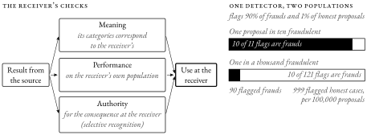
Figure 15. The receiver’s three checks, and one detector in two populations. Left: the three checks between a source’s result and its use at the receiver. Right: one detector in two populations, where 10 of 11 flags and 10 of 121 flags identify fraud.
Verified, then adopted. Verifying a proof registers the model as a candidate and changes nothing about how the next request is decided. Adoption is a separate act under the receiver’s own standing mandate, and it passes the mandate’s test like any other update. From then on the model takes part in the receiver’s decisions, and they are the receiver’s decisions. The source and Carol’s registrar can use the same weights under different thresholds, and neither has to follow the other. When one act needs several institutions, each applies its own procedure to its part.
The checks are needed because a correctly signed model can still be wrong. A model aggregated by federated learning can rest on mislabeled data or perform poorly at its destination, and a model can be replaced with one that behaves normally except on chosen cases [6].
Before local cases exist. A lesson is worth most to a receiver with no cases of its own, and that is when the performance check has least to work with. The authority competent for the receiver’s procedures can then permit a bounded protective use on a stated evidence basis: for example, a temporary referral for additional checks, with review, an expiry date and a cumulative limit on the burden imposed. The mandate also states how local evidence will be gathered. The investigations that follow begin to supply it, though cases selected by a protective measure need not represent the whole population (Proposition 1, Appendix B.3). The verified calculation is one input to the authority’s decision and is no evidence of local performance. Appendix C.3 says why the bound is fixed in advance and what can be known of its size.
Passing a lesson on. A receiver that adapts or retrains a model becomes the source of a new result. It obtains authority for the new release and supplies a proof of the new calculation, while the earlier proof remains evidence for its own statement. The new result keeps its dependence on the earlier sources on record, which Appendix F.1 relies on. A release also needs a purpose at the source. Reciprocity is one, since today’s source may need a pattern learned elsewhere tomorrow, and a joint investigation or a statutory duty to cooperate is another. A source may restrict or decline a voluntary release (Appendix C.5).
C.3. A lesson that arrives before the receiver has cases
A protective use permitted before the receiver has cases (Appendix C.2) carries a bound fixed in advance.
Why the bound is fixed in advance. Before a scheme reaches the receiver there are no local cases of it, so the receiver’s own findings cannot yet confirm the lesson. Early protection therefore cannot wait for local confirmation. It is authorized in advance, within a limit, or it is not had.
A price can be estimated first. The share of the receiver’s own recent requests that the lesson matches needs no finding. That share, times the volume, times the cost of a hold, estimates what holding every match would cost each day if tomorrow’s requests resemble recent ones.
A ceiling can be fixed. A term of holds has a daily number of holds, a worst permitted cost for one hold and a number of days. Their product is a ceiling. The holds of the term cannot cost more than that, provided no hold is extended and each finally costs no more than its permitted worst. A flood of honest requests that happen to match the lesson can push the spending up to the ceiling. The ceiling covers the holds of the term and nothing else. Investigations, and anything done after the term, are counted separately.
Two forms, chosen in the receiver’s own mandate. The receiver can investigate a number of the requests the lesson matches each day and hold none. Or its mandate can authorize holds for a fixed term under such a ceiling. During a term the lesson is not dropped merely because local findings have not yet confirmed it. A binding correction, a loss of authority, the case’s own clock and the accounts of Appendix C.4 all still govern during a term. A term is permission to hold while the accounts and the day’s capacity cover each hold.
Two questions for the receiver’s own findings. One is whether the requests the lesson matches are turning out to be fraud more often than other requests audited the same day. The other is whether the share of fraud among the matched requests is high enough that a hold stops more than it costs.
Expiry and ceiling. A use ends at its expiry or at its ceiling. A warning whose scheme did not come within the term is no finding against its source.
In a worked example the lesson matches one honest proposal in 64, so at 2,000 proposals a day about 31 are matched. At a cost of 8 for holding one honest proposal the estimate is about 250 a day. A capacity of 80 holds a day gives a ceiling of 640 a day, or 17,920 for 28 days.
C.4. What bounds a source
The receiver’s checks and its own adoption stand between a source and any effect. The receiver’s protection against a mistaken or dishonest source rests on limits the receiver keeps itself.
What a lesson about fraud can do. It can add a hold or an investigation to what the receiver’s own procedure would do. It can release nothing.
One rule admits every such hold and investigation. An action is admitted only if, at that moment, three things are true. The day’s capacity for lessons has room. The party has not reached a limit on holds from lessons from elsewhere. And three accounts each cover the action’s worst permitted cost, which is then set aside in all three: the lesson’s account, the source’s, and one for all lessons together. The accounts are kept outside the model, like the mandate’s other running totals.
The case’s own deadline. The mandate says whether a hold added by a lesson may run past the case’s own deadline. In this design the default is that it may not. Either way the case’s original clock stays on the record, and no lesson restarts it.
A lesson stays on its accounts. Its holds and investigations are charged to these accounts for as long as the lesson is used. A lesson that stops fraud for a month can match only honest requests afterwards, so a record of past value does not show future value.
Credit. A fraud confirmed among a lesson’s holds, which the receiver’s own procedure would not have stopped, is credited once, to one lesson, at no more than the amount at stake, and only up to a lifetime cap on credit for each account.
Identity. Sources under common control share one account. A lesson sent again under a new name draws on the account of the lesson it repeats. A source’s allowance is renewed only by credit earned at this receiver or by the authority’s own act.
Where the burden lands. Before any hold, the lesson’s matches on the receiver’s own recent requests are checked for concentration on one party, on one intermediary’s customers, or on a protected group or a stand-in for one. A lesson that concentrates needs a person’s decision, with reasons, and the party held has a route to have the hold reviewed.
Capacity. The random audit and the standing procedures have capacity that no lesson can draw on.
The statement. Take one account with a fixed opening allowance and a fixed lifetime cap on credit, and three operations on it: admitting an action, where the test and the setting aside of its worst cost form one indivisible step; settling an admitted action, on that same account, at its actual cost; and granting a credit within the cap. Assume that an admitted action finally costs no more than the worst cost set aside for it. Then on every sequence of those operations the cost settled plus the cost set aside never exceeds the opening allowance plus the credit granted, and so never exceeds the opening allowance plus the lifetime cap.
Proof. Write for the opening allowance plus credit granted, less cost settled, less cost set aside. starts at the opening allowance. Admitting an action of worst cost requires and lowers by , so is still at least zero. Settling an action at its actual cost, which is at most , raises or leaves it. A credit raises . So is never below zero, which means that the cost settled plus the cost set aside is at most the opening allowance plus the credit granted. By assumption an admitted action finally costs no more than was set aside for it, so the cost imposed is at most that sum. Credit granted never exceeds its cap, which gives the second bound.
Corrections and added allowances. A correction that takes a credit back leaves the cost already imposed in place. The balance is then reckoned on the credit still standing, and the account can be in debt (Appendix F.1). Where the authority adds an allowance later, the bound has to count every allowance authorized.
What the bound is a bound on. It is in the mandate’s unit, on costs the mandate has priced, at the worst cost authorized for each action. The checks for concentration reduce harm outside that unit, such as a competitor’s lost business, discrimination, or the receiver’s own liability for a hold with no legal ground. Credit can be manufactured by staging frauds that are then caught, and what that can buy is limited by the lifetime cap.
C.5. Terms of exchange
What arrives from a source may be a ruling in one case, a learned model or a complete decision procedure. A ruling keeps the scope of its case, so it settles that case and no other. For a model or a procedure, the check of meaning in Appendix C.2 aligns the source’s features, labels, time windows and the capacities in which parties act with those of the receiver. Each of the three checks can turn on any of the three levels of Appendix A.2: a receiver may apply a similar rule through different evidence, and the people subject to it may respond differently. The receiver’s judgments about the results of others, like its own decisions, stay tied to that institution and purpose, and the companion paper calls the resulting set of separate decisions partial consensus.
A receiver that adapts or retrains a model and passes the result on records the computations and source records on which the new result depends, obtains authority for the new release, and supplies a proof of the new calculation that it asks the next receiver to verify. Each step must use a proof construction that is available, and the one developed here is the bounded construction of Appendix D. Once a receiver admits a correction, it marks dependent models and uses, including results it has passed on. The terms at each step state who delivers corrections and what is promised about being current, and the next receiver applies its own rules of recognition before admitting a correction.
Institutions may train locally, share parameters, delegate training, use local adaptations or keep a model frozen. Several machines may run the same neural network under different adopted procedures. Each institution controls its own interpretation, so sharing parameters requires no synchronization of interpretations across the network, while an act that needs several institutions still coordinates the admissions it requires. Exchanging changes to weights, as distinct from complete models, requires compatible parameters and meanings. Otherwise the source supplies a complete detector, a proposed rule or a packet of evidence with a specified interpretation for the receiver. A numerical representation of jurisdictions by features of their legal traditions may suggest transfers worth investigating. It supplies a starting point for investigation, and adoption still requires the three checks.
The source’s mandate and terms of release record the purpose of a release, its recipients and its permitted expenditure, meaning the use of resources and the consumption of allowances for disclosure, risk and burden. Whether sharing is worthwhile depends on the expected value of the lesson, the costs of verification and integration, the disclosure and the terms of cooperation between the institutions. An agreement for a continuing exchange specifies its members, its conditions of release and the obligations of receivers. Reciprocal access to later results gives each member a continuing reason to contribute, and a receiver can then evaluate an available lesson before rediscovering the pattern itself. Delivery, verification, local assurance and the availability of services remain part of using a shared result, and the agreement determines which results are actually shared. Such terms coexist with statutory duties of cooperation and other lawful grounds for release.
Failures of different kinds call for different remedies. A reversed finding at the source may require refitting and a recheck of the cases it affected, and a change in the receiver’s law may require a different use of the same fitted model.
Appendix D. The proofs of fitting and of inference
D.1. Commitments and the signed case list
The letters of this appendix are local to it. We instantiate the commitments in the Ristretto group of prime order
[ ^{252}+27742317777372353535851937790883648493 . ]
Fix generators with no known discrete-logarithm relation. For each row the source makes six Pedersen commitments, one for each category and label :
[ C_{ijb}=z_{ijb}G+r_{ijb}H . ]
The hidden indicators select a category and a ruling, and independent uniform scalars , the blindings, hide them. A row with a label is one-hot: exactly one indicator equals one. A row whose label is missing has six zero indicators. The public list gives, for each row, the presence of a label, censoring and the observation time, under unique sorted case identifiers. Let indicate publicly that a label is present, and let indicate that it is present, uncensored and available by the training cutoff. The relation to be proved is
[ z_{ijb}{0,1}, {j,b}z{ijb}=p_i, n_j=i e_i(z{ij0}+z_{ij1}), k_j=i e_i z{ij1}. ]
The list and the public rule of eligibility determine every contributing row, and the commitments supply its hidden category and label. The list has between 1 and 256 rows, the range for which the relation and its bounds are specified and proved below. The source attests its coverage and its encoding under the named rule.
The released artifact identifies the task, the normative source, the category definitions, the learner, the runtime and the fixed decision policy, which is the mapping from weights to answers in the adopted procedure. It gives three canonical fractions with . It binds the training cutoff, the list, the recipient, the purpose, the permitted actions and the identity under which the release is accounted. For each source the receiver records the sequence of corrections it has admitted as current, with the hash that identifies its end. A link from a new artifact to one it historically replaces preserves lineage without asserting that the new fit depends computationally on invalidated examples.
The source signs with Ed25519 under a distinct protocol domain. A shared canonical encoding and SHA-256 content hashes bind the exact bytes of the list. The receiver’s own policy supplies the expected source key, task and latest correction, and descriptions supplied by a caller are compared with those expectations. The verifier derives the calculation from every signed row and the public rule of eligibility, so the construction checks the complete attested list.
D.2. The fitting relation and Proposition 3
The proof of fitting is an aggregated Bulletproof [13] over commitments that the verifier derives. Every range is eight bits. For each indicator commitment , the verifier includes and its complement . For each row it derives
[ R_i={j,b}C{ijb}-p_iG ]
and includes both and . Bounding both signs of a residual forces it to zero. For category the fitting equation is
[ a_j(n_j+2)=b_j(k_j+1), ]
and the verifier derives the commitments to the counts and the fitting residual directly from the list:
[]
Both and enter the proof, with openings equal to the fitting residual and its negative. The prover must use these derived commitments, which bind the counts to the list. Each row contributes twelve entries for bits and complements and two for its residual, and the fitting equations add six, giving entries for rows. Identity commitments, which commit to zero, pad the count to a power of two. The transcript binds the whole artifact and the signed list, so that the list, the fit and the output form one statement. That statement, the signed list and the proof travel together.
The security argument needs knowledge soundness: when a verifier accepts a proof, committed values satisfying the proved relation can be recovered, including for statements chosen adaptively. This recovery, called knowledge extraction, is a device of the security proof. The receiving verifier itself learns the public statement and the proof. Extraction is essential. A Pedersen commitment is perfectly hiding and therefore has an opening to every possible value, so the mere existence of an opening supplies no knowledge of the values used in the claimed calculation. The argument needs extracted openings with the stated algebraic correspondence.
Proposition 3 (Private fitting). Assume adaptive knowledge soundness and zero knowledge for the instantiated aggregated Bulletproof. Assume an unknown discrete-logarithm relation between the fixed Pedersen generators, Ed25519 authenticity, SHA-256 collision resistance and an injective shared encoding. For an accepted signed list, statement and proof, outside the corresponding failure events, knowledge extraction supplies openings of every commitment on the list that satisfy the stated bit, row and eligibility relations. The public fractions equal for those openings.
Proof. Extraction supplies bounded openings for all range entries, including each original commitment. A bit and its derived complement open to non-negative integers at most 255. Their sum is one modulo . Binding of the commitments and make the integer sum one, so the original value is zero or one.
A residual and its negative also have non-negative openings at most 255. Their integer sum is zero, so both are zero. Binding identifies each residual with the verifier’s linear combination of the extracted original openings. The row residuals give the one-hot or all-zero condition. The fitting residuals give the fitting equation modulo .
The bounds give , , and . Each product in the fitting residual is at most . Their absolute difference is at most , below the group order, so the modular equality is an equality of integers. Positive denominators and canonical reduction give the claimed fractions. Authentication and exact encoding bind the equations to the signed list and to the task the receiver expects.
Ganesh et al. prove simulation extractability for Fiat–Shamir Bulletproofs in the programmable random-oracle model [14]. Applying this result about the protocol family to the transcript used here is a premise of the instantiation.
The same relation applies to three explicitly declared categories of yes-or-no fraud findings, with 1 to 256 rows in total and the same bounds and premises about the source and about security.
D.3. The inference relation and Proposition 4
The classifying authority of Appendix C.1 is the issuer competent for the case. To conceal the category of the request it supplies a signed credential, which is the signed classification of that section, with three commitments
[ U_j=u_jG+s_jH,u_j{0,1},_j u_j=1 . ]
Public fields bind the task, the normative source, the category definitions, the case, the subject, the revision, the source cutoff and a digest of the request. The adopted fractions determine public decision codes : no additional consent is zero, consent required is one and referral is two. For a claimed output the proof establishes
[ _j c_j u_j=o . ]
It checks each bit and complement, both signs of the one-hot residual and both signs of the decision residual. Ten entries pad to sixteen. The transcript binds the artifact, the signed credential and the complete statement of inference, and the three travel together.
Proposition 4 (Private inference). Under the cryptographic and encoding assumptions of Proposition 3, an accepted signed credential, statement and proof establish knowledge of a one-hot opening of the credential. The claimed output equals the fixed adopted policy’s decision for that category. The statement binds this conclusion to its exact artifact, case revision, request and proposed operation.
Proof. Extract the three committed openings. The checks on bits and complements and the one-hot residual select exactly one category, by the integer argument of Proposition 3. The checks on the decision residual give . Since exactly one equals one, both sides lie between zero and two, so the equality is an ordinary equality of integers. Verification of the signature and the transcript identify the credential, the artifact and the statement. Exact comparison with the statement the machine expects fixes the present request and operation.
The machine derives the expected statement from its current records and the proposed effect, so a proof for another operation fails the comparison. The classification of a case can be corrected like a ruling, so a separate admitted step records which credential is current for the case. Before use, the machine checks that the revisions of source and case match those recorded as current, that the artifact is adopted, and that any required consent or reserved determination is present. Both relations rely on competent sources, faithful encoding, truthful labels and the asserted legal meaning. Their cryptographic premises concern the declared calculation, and the receiver establishes performance on new cases through the separate checks of Appendix C.2.
D.4. Disclosure
Both proofs reveal their public statements: exact weights, public fields and answers. Zero knowledge bounds the additional information disclosed by the proof. The examples of Appendix C.1 are exact. With one eligible row, the selected category has weight for a negative label and for a positive one, and every other category has . For yes-or-no labels , the average reveals the final label to someone who knows the other 499, and a corrected average reveals a changed label through . A threshold on the size of an aggregate therefore gives no privacy guarantee by itself. The terms of release must cover what the statement already reveals, including the case identifiers and revisions that appear in the list. In the initial consent model the three categories have three different answers, so an answer identifies the category. After the six reversals, ordinary and common-control cases both receive “no additional consent”, and the answer alone no longer distinguishes them, though other public fields or auxiliary information may (Figure 16).
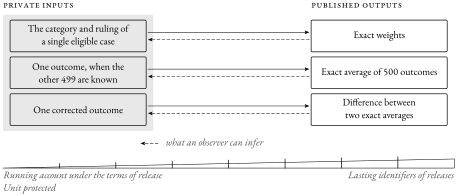
Figure 16. What published results reveal, and the account of releases. Three published outputs and what an observer can infer back from each: a single case from exact weights, one outcome from an exact average when the others are known, and a corrected outcome from the difference of two averages. Below them, the running account adds every release against the unit protected.
A statistical guarantee requires the terms of release to specify the unit covered, the neighboring datasets, the bound on each contribution, the recipients and the complete observable transcript. The transcript includes visible weights, gradients, scores, model selection, releases of corrections, refusals and timing. It also covers repeated queries to a model that stays local, and every coalition of recipients included in the claim. For neighboring histories , differential privacy requires
[ e^{}+ ]
for every observable event . The parameter controls the multiplicative factor between the probabilities of the event, and allows the stated additive difference. The institution must adopt a mechanism that satisfies this condition under its stated bounds on contribution, output channels and cumulative accounting [7]. The guarantee applies to the specified neighboring histories and the complete transcript, so its meaning depends on both the unit protected and the channels observed. Lasting identifiers of releases mark repeated use of the same released result.
The construction with exact weights fails any nontrivial differential-privacy guarantee in the single-row example. Across neighboring single-row labels, an event that releases one of the two distinct weights has probability one under one history and zero under the other, and the inequality requires .
Learning from a statistic already released privately is post-processing under the same terms of observation [7]. Fresh private data and further disclosures need further accounting, and using corrected data generally incurs a new cost of release. A retry must reuse the retained identity of the release, its sample and its bytes. Renaming a model leaves what was spent unchanged, and deleting a row leaves earlier releases observable.
Changed rows of the list and changed credentials need fresh independent uniform blindings. Reusing a blinding exposes a changed indicator through . Fresh blindings prevent that direct comparison, while changes in the weights and the public fields of corrections remain visible. A proof of a computation on a supplied random tape establishes that the tape was used. Statistical privacy requires in addition the claimed law of sampling and terms that cover the combined release.
Required performance can itself disclose private information. Suppose two neighboring histories require different visible payments, each forbidden under the other. The event containing one history’s required payment has probability zero under the other, so differential privacy bounds the probability of successful payment under the first by . The bound follows from the behavior that is required to be observable. An authorized change to the observer, the receipt, the intermediary or the permitted disclosure can alter the problem, and it must also cover any later payment that would reveal the same information.
Appendix E. Completing a duty
E.1. Keeping earlier duties
An update can leave a duty impossible to complete. A learned procedure governs future actions, and the actions that complete earlier promises are among them. Alice’s payment is such a promise. The steps that remain before it is complete are changes the registrar’s machine must still admit, under the procedure in force when they arrive. Suppose the registrar adopts a model with a new detector, the detector flags Alice, and the updated procedure no longer permits those steps. Every account balances and every new decision can be defended, and her payment can no longer be completed (Figure 6).
An institution can decline an update that lies within its discretion. So before the machine adopts a procedure, it asks whether every duty already owed can still be completed under it.
One procedure. To ask the question the institution supplies, for each duty, what no model may redefine: the goal, the conditions that must hold along the way, the deadline, and the ways the outside service may respond to each action, including the arrival of a payment already instructed. With these inputs fixed, the check works backwards from the goal. A state is one step from done if the procedure permits an action there whose every possible response completes the duty. A state is two steps from done if some permitted action leads, whatever the response, to a state at most one step from done, and so on. The round in which a state is first reached is its rank.
Theorem 1 (Completion under a fixed procedure, in plain terms). From every state that the backward construction reaches, the duty can be completed with its conditions holding throughout, in at most as many completed service steps as the state’s rank, whichever of its declared responses the service gives. Appendix E.2 gives the construction, the exact statement and the proof.
The theorem turns the question into a finite computation that the machine runs before adoption. For Alice’s payment, the construction under the old procedure reaches the state in which the payment is owed, and under the procedure with the new detector it does not. So the adoption is refused, unless another authorized route exists or the competent authority alters the duty, as described below.
A sequence of procedures. Passing this check at every update is still not enough. Suppose Alice’s payment can stand in either of two states, and , before the state in which she has been paid. Procedure permits only the route and procedure only . Under either procedure alone she is paid from both states. If the procedure is switched after each first step, the state runs and she is never paid (Figure 6). Each step lowers the rank under the procedure in force, and each switch replaces that rank with another and discards the progress.
Progress therefore has to be counted in a way that belongs to the duty and to no procedure. When Alice’s payment becomes owed, the registrar fixes, with the duty’s other inputs, one whole number for each state the payment can be in: a limit on the service steps still needed from there, and zero once she is paid. It can use the ranks just defined, under the procedure then in force: if that is , two for , one for and zero for . We call this fixed table the duty’s shared rank, , and no later procedure can change it. A candidate is adopted only if adopting it leaves the payment in a state with no higher number than before, and if it permits each step of the bank’s service in a form that keeps the duty’s conditions and ends in a state with a lower number, whatever the bank’s response. fails, because the only step it permits from leads to and raises the number from one to two, and so the alternation cannot begin.
Theorem 2 (Completion through updates). Assume that rank zero implies the fixed goal. Suppose that each state of positive rank receives a completed step of the promised service within at most admitted changes, for a fixed positive integer . If every change in between preserves the duty’s conditions and does not increase , and each service step strictly decreases it, then the goal occurs within at most admitted changes from the initial state .
From , where is two, that is at most admitted changes. The theorem counts admitted changes: adoptions, service steps and recorded events from outside. A deadline needs a real clock that persists through adoptions and renewals of the mandate.
The supposition that a service step completes within changes has two parts. The bank must actually perform, which is a premise about the bank. And the registrar’s own updates must leave room for it, so Alice’s payment carries an allowance of its own: a fixed number of adoptions that may affect its route. This is a different limit from the mandate’s cap of Appendix A.4. The cap counts every adoption and is renewed with the mandate. The duty’s allowance counts only the adoptions that disturb this one payment, and neither a service step nor a renewal of the mandate refills it (Figure 17). Without it, administrative activity could postpone a payment indefinitely while every individual procedure still permitted it.
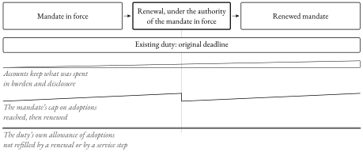
Figure 17. Renewal of a mandate and a duty’s own allowance. Across a renewal the existing duty keeps its original deadline, the accounts keep what has been spent, and the duty’s own allowance is not refilled.
When the route must close. A discretionary update can be refused. A binding change of authority cannot: if a competent source revokes the permission on which the only lawful payment depends, the revocation takes effect. The admitted change that records it blocks the affected use at once, even when no other route exists.
The duty outlives its route. The record carries it as outstanding, with the fact that its completion is no longer assured and any instruction that can still be carried out. The competent authority can then set new terms, with another performer, another timetable or another form of assurance, or discharge the duty by an authorized release. Unless the performance originally specified took place, the original objective is recorded as unmet. The consequences of a necessary change thereby stay visible for correction and remedy.
A new operator. The same continuity is required when the operator, the person or organization that runs the machine for the institution, is replaced. The terms of the handover fix the point at which the successor takes over, and from that point the outgoing operator can no longer write to the records. Across the handover go the adopted procedure, the code that runs it, the records of what was derived from what, the corrections still pending, the clocks on cases, the mandates, the running totals and every instruction that can still be carried out (Figure 18). What does not go across is authority. The ability to write to the records confers none of the powers of the registrar, of a tribunal or of the bank, and each service the successor has promised needs an appointment behind it after the handover (Appendix F.7).
In Carol’s purchase the handover comes while Alice’s payment is pending. The instruction to pay crosses to the new operator with the model and any corrections still pending, and when the bank’s evidence shows the full 100 units paid, the machine records the payment and the amount outstanding falls to zero.
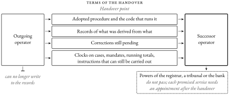
Figure 18. What a handover carries. Procedures, records, pending corrections, clocks, mandates, totals and outstanding instructions pass to the successor. The powers of a registrar, a tribunal or a bank do not.
E.2. Completion: Theorem 1 in full, and the proofs
For each duty the institution supplies the inputs of Appendix E.1: the goal, the conditions of safety, the permitted routes and the deadline, together with the possible responses to each action that is started and the services that must complete. Let be a finite set of states, the safe states, in which the duty’s conditions hold, and the goal states. For an action started in state , let contain the endpoint of every complete response path. Every intermediate state must also be safe, and the model of responses includes instructions already issued that can still be carried out. Let contain the actions admitted in under the procedure . Define
[ _B(X)={sK: aA_B(s), (s,a)X, K}. ]
Starting with , set . Because is finite the sets reach a fixed point , the states from which a selected admitted action can move safely toward the goal under every specified response. The rank of a state in is the least for which it belongs to .
Theorem 1 (Completion under a fixed procedure). Each state in has a strategy that reaches within at most its rank in completed response steps. The strategy stays in , provided the actual responses satisfy the declared response sets, which are non-empty, and the steps complete.
Proof. Give each its rank , the least with . Rank zero means the goal holds. A state of positive rank entered through an admitted action all of whose complete responses end in the preceding set. Select that action. Every response stays safe and ends at a smaller rank, and induction gives the bound.
The lost route of Section 8 and Appendix E.1 has this form. Take a refund, and let be the state in which it is owed and the state in which it has been paid. The old procedure permits , so . A new detector flags the recipient and removes that action, so , and adoption needs an authorized alternative route or a competent decision about the duty (Appendix E.1). Alice’s payment is the same case, with Alice as the recipient.
The goal, the model of responses and the identity of the duty are inputs that a proposed procedure cannot change. A candidate cannot redefine payment as assessment or omit the possible arrival of an old payment. The declared responses must be non-empty, must cover the safety of intermediate states and must describe an implementation that is available. A local timeout can release a reserve only when the evidence agreed for the instruction rules out further performance by the service. An institution can refuse a discretionary adoption, so a discretionary candidate must account for any route to completion that it would remove, while a binding change of authority takes effect regardless.
The shared rank of Appendix E.1 is a function from the states of the duty to the non-negative integers. It is fixed with the duty’s other inputs, and a candidate cannot change it. Adoption preserves the goal and cannot increase the current rank, and each promised service step has an admitted implementation whose possible responses stay safe and strictly lower the rank.
Proof of Theorem 2. Before the first service step the rank is at most , and the step lowers it by at least one. Repeat over blocks that end at service steps. After at most blocks the rank is zero, and each block contains at most admitted changes.
In the alternation of Appendix E.1 no shared rank admits both procedures: the step of from requires , and the step of from requires . Under the ranks for , which are those the construction above gives for , is refused (Technical supplement §N.3).
The count in Theorem 2 includes admitted changes of context, service steps and recorded events from the environment. More general cases can be represented as a finite game. Its state includes the procedure in force, the authority to update, the clocks and the unfinished work, and its environment includes the permitted changes of model and the responses of the service. A shared rank is the simpler sufficient condition used here.
Appendix F. Correction, the rules as a whole, and handover
F.1. Correcting a lesson
A correction follows dependence. Carol’s request is on hold. Her registrar adopted the source’s model, the model gives common control a weight of , and the adopted procedure requires consent. Then the authority that reviews the source’s rulings reverses six of the seven that had required consent. Carol’s file mentions none of those rulings. Her hold rests on an assessment, the machine’s recorded answer for her request. The assessment rests on the adopted procedure, the procedure on the fit, and the fit on the rulings. A correction has to travel that chain to reach her (Figure 5).
The machine therefore records the chain. For every model, adopted procedure and assessment it keeps what the item was derived from, down to the version of each ruling. A link records that one item may depend on another. Removing a link takes an argument, checked by the machine, that there is no dependence, and the absence of an observed correlation is not such an argument. Treating every use of an affected procedure as affected is always sound.
Block, then reconcile. A correction names the ruling it corrects, its authority and the time from which it operates. The receiver checks where the correction came from, decides under its own rules whether to accept it, and records it.
From that moment everything that may depend on the corrected ruling is blocked from supporting any further change to the records. The block covers the model, the procedures built on it, the assessments made under them and any model derived later from the same ancestors, so that renaming or re-deriving a model does not escape it. It takes effect whether or not a replacement exists.
A blocked decision can be relied on again only through reconciliation, a recorded basis for further use. The basis is a fresh assessment under a current procedure, or a showing, checked by the machine, that the correction leaves the earlier answer unaffected, or a decision by the competent authority. A reconciliation covers one decision, one correction and one use of that decision.
The past stays on the record. Earlier assessments remain there with their basis, clocks keep their original start and deadline, and what was disclosed stays disclosed. A correction does not reverse a completed transfer, compensate a loss or cancel a payment the bank may still make. Each such step takes an act of its own by the authority competent to perform it.
For Carol the sequence is this. The six reversals are recorded, and the model and her assessment are blocked. A reversed ruling counts as a ruling the other way, so the source now has one ruling in eight that required consent, and the weight for common control is . The source issues a new signed list, identical except for the six changed rows, with a new proof. The receiver verifies the proof and adopts the new model under its mandate. Her request remains blocked, because adopting a model reconciles nothing. When the machine assesses her request afresh under the new procedure and records the reconciliation, the answer becomes “no additional consent” and the registration can proceed. Her request keeps the clock it started at the first hold, so the whole of her wait counts toward its deadline and the mandate’s totals.
Corrections differ in kind. A reversed ruling counts the other way, while a ruling withdrawn as unresolved no longer counts at all, and the two can leave a score on opposite sides of a threshold. In a category with 90 findings of fraud among 100, reversing seventy of them moves the score from to , and the answer at the threshold of from hold to permit, while withdrawing the same seventy as unresolved moves it to , which still holds.
Dependence is recorded through everything built from a case, which includes the fitted values and also any way of sorting cases, any observation, any selection and any adviser’s score that was itself built from cases. A model fitted without a case, but using a way of sorting that was introduced because of that case, rests on the case.
After a correction, an earlier procedure that is still authorized and rests on nothing now corrected, taking every outstanding correction together, is a candidate and no more. Installing it is an adoption like any other. It is counted against the mandate, and it must pass today’s checks of authority, of duties already owed and of the accounts. If no candidate passes, the institution’s own procedure with no learned part governs, which for a question of interpretation means referral to the official, until a refit from the corrected record is adopted. Where no procedure, that one included, can still complete every duty owed today, the rule of Appendix E.1 applies: the duty stays on the record as outstanding, and the competent authority sets new terms or releases it.
The accounts of Appendix C.4 keep each charge and credit in a journal. If a finding that earned an account credit is reversed, the credit is taken out by replaying the journal and the cost already imposed stays. The account may then be in debt, and nothing more is admitted on it until the debt is cleared. This concerns those accounts only. The mandate’s other running totals keep the meaning Appendix A.4 gives them.
A competent authority’s finding that a source’s signed list was false is a correction to that list. Everything that rests on that list is blocked until reconciled. Lessons of the same source that rest on other lists are not corrected by it, and what the receiver does about the source is a matter for its mandate.
When the receiver knows. The block begins when the correction reaches the receiver. Consider two worlds in which the receiver’s records are identical. In one the source’s ruling stands. In the other it has been reversed and the notice has not arrived. Any computation on the receiver’s records gives the same answer in both worlds, so the receiver’s own guarantee can start only when it records the correction (Figure 19). A stronger promise has to come from the source, in the terms on which it shares: a period of validity after which the model must be renewed, a service that confirms at each use that the model is still current, or a bound on the delay of notice. Where the source has made no such promise, the receiver records the model’s status as possibly out of date.
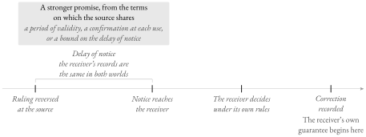
Figure 19. A reversal at the source and its recording at the receiver. One timeline: the reversal at the source, the notice, the receiver’s decision and the recording, from which the receiver’s own guarantee begins.
Who puts what right. Different errors have different owners. The issuing source corrects facts that were false or incomplete. The authority that adopted a procedure repairs a wrong encoding of the law. The firm that runs the machine investigates a model put into use without authority. A reviewing authority or court decides a challenge to a reserved judgment. The bank answers for a payment it failed to make. The calculation settles none of this by itself: neither the correctness of the arithmetic nor the correction of the register decides who must compensate a loss (Appendix G.1).
F.2. The rules as a whole
Each mechanism so far guards one kind of change. Carol’s purchase passed through all of them, and sometimes through two at once: a model was adopted while her request was on hold, and the operator changed while Alice’s payment was pending. A guarantee about the whole purchase therefore has to hold over every kind of change together.
There are eight kinds: registering a candidate model, adopting a procedure, assessing a request, using an assessment to make a change, reusing an earlier assessment after the procedure has changed, recording a binding revocation, recording a correction, and handing over to a new operator. Each passes its own check before it takes effect. Each is checked under the rules in force before it, so that a new power cannot authorize its own creation. And each keeps the history, so that what was done, charged and disclosed stays on the record. Appendix F.5 states the eight checks at the level of individual records.
Theorem 3 (Governed learning). Assume complete mediation; that each check and the change it permits form one indivisible step; that the checks of procedures, of inference and of dependence accept nothing false; and that the sources and services keep the terms recorded for them. Then every finite sequence of admitted changes that starts from an admitted state has these properties.
- Every procedure in force has a lineage of adoptions, each authorized under the rules in force before it.
- Every assessment used to authorize a change was made under the procedure currently in force, or is covered by a checked, currently valid record of reuse for that use. Its original computation stays on the record.
- Changes of model keep the history of what was consumed, disclosed and done. They keep every instruction that could still be carried out until the evidence agreed for that instruction supports ruling its performance out. A competent authority can change current positions and the future terms of a mandate without erasing that history.
- After a correction is admitted, no decision that currently relies on what was corrected authorizes a further change without the prescribed reconciliation.
- A model from elsewhere has force only under the receiving institution’s own terms of adoption.
The proof is an induction over the sequence of changes (Appendix F.5), so the five properties hold in whatever order the eight kinds of change arrive. The theorem states what cannot go wrong, and Theorem 2 adds that duties are completed, under its conditions on the service.
F.3. State and common conditions
An admitted change is also called a transition. Write the local state as . These letters are local to this appendix, and and here are components of a record, distinct from the sets of Appendix E.2. The context holds the rules, powers, procedures in force and standing mandates. The history keeps attributable events and derivations. holds positions, resources, exposure and the persistent accounts. holds cases, assessments and unfinished work.
Each change is specified by a payload containing its exact inputs, its evidence and the changes of field it proposes. Write for appending its attributable event to the history, and for replacing field of record while leaving the other fields unchanged. Candidates and training records are kept in . Assessments, cases and records of reconciliation are kept in . The graph of dependence stored in indexes records in both and , so an assessment has recorded ancestors although it resides in .
Every change satisfies a common retention condition . Earlier entries of the history are preserved. Each non-negative charge is added to the relevant cumulative total, and each allowance used is subtracted from its remaining balance. A successor mandate can enlarge future limits only under the authority of its predecessor, keeping earlier expenditure and the resulting lifetime totals. Original identities of cases, start times, deadlines and identities of instructions stay recorded. Reducing the possible performance of an old instruction requires the evidence agreed for it. A competent decision about a duty may change current terms, positions or status, and its record keeps the former terms and the actual performance. These requirements also apply to concurrent changes within one transition.
F.4. Corrections pending
For a record indexed by the graph, let contain and all its ancestors along edges of possible dependence. A link kept solely to record that one artifact historically replaced another is distinguished from such an edge. An admitted correction identifies the set of revisions it affects. For a proposed use , define
[]
Here is the set of admitted corrections, and means that a currently valid reconciliation for this exact record, correction and use has been checked and recorded. Its basis is a current reassessment, a checked showing of continued applicability or a competent decision about the duty (Appendix F.1). The supporting revisions of source and case must be current for that use. A reconciliation for one correction or use leaves every other correction or use to its own check.
The definition includes a correction admitted before a new dependent record was created. A new derivation must keep its possible ancestors and is checked against the existing history of corrections. Removing an edge requires the evidence of independence of Appendix F.1. The machine may instead keep conservative unresolved marks that contain this set, and permission then requires every applicable mark to be cleared by a checked reconciliation.
F.5. The eight rows
The eight kinds of change listed in Appendix F.2 are specified at the level of records by the following conditions and replacements. Every row also checks and appends to .
| Row | Additional condition | Exact changes to records |
|---|---|---|
| Register | Authorized observations, an identified candidate, a checked fitting relation and complete declared parents | Append the candidate, training and dependence records to , and charge the generation in . Leave and unchanged. |
| Adopt | Competence under the predecessor context, the exact candidate, the receiver’s terms of adoption, current derivations, the mandate’s accounts and the treatment of continuing work | Install the named procedure and any separately authorized successor mandate in . Charge expenditure and allowance in . Record only checked decisions about cases in . Installation alone clears no correction. |
| Assess | Authorized exact inputs, procedure, source cutoff, case and purpose, and a supported inference, with all dependencies kept | Add the assessment to and its edges of dependence to . Charge costs and disclosures in , preserving the original clock of the case. Leave unchanged. |
| Use | Current authority and revisions, the complete check of the request, a current binding to the procedure in force or a valid reuse, and no unresolved correction for the exact use | Apply the admitted economic effect to and its continuation to , keeping possible instructions. Leave rules and procedures in force unchanged unless the corresponding rows are also checked. |
| Reuse | Current authority and a sound correspondence between the original assessment and the exact present use | Keep the original assessment and add the record of the correspondence to . Record charges in . Add a reconciliation only for each correction whose current basis has also been checked. |
| Revoke | A binding change of authority, authenticated under the source’s terms and the receiver’s recognition | Record the named change of rule, power or validity of a mandate in and block affected new uses in . Keep the lost assurance, surviving claims and , apart from checked processing charges. Install no new procedure under this row alone. |
| Correct | A competent correction, exact revisions and a conservative closure under dependence | Append the correction to and mark affected reliance in , allowing only a simultaneously checked reconciliation to clear a mark. Keep and apart from checked processing charges. |
| Hand over | A complete and usable handover, an outgoing writer that can no longer write and the successor’s authority for its promised services | Change only the operator and its authority to write in . Carry and across and record the handover in . |
A payload that changes several kinds of record must satisfy every applicable row. Its replacements must be consistent with one another and are checked as one proposed successor state. Authority for each change is checked in the predecessor context, so a new power cannot authorize its own creation. For example, a use that also changes a procedure in force requires both Use and Adopt, and a handover that processes a payment must also satisfy the conditions of that payment. No row gives permission to bypass another applicable condition. If the payload also records an effect, the conditions of Use must hold in both the predecessor and the proposed successor state. In particular, a simultaneous correction, revocation or change of procedure cannot leave that effect relying on an unresolved correction, an invalid power or a mismatched assessment.
We write when the applicable conditions and the retention condition hold and is exactly the state obtained by the checked replacements and the appended event. The checks and the installation form one indivisible transition. The admitted initial state contains the adoption, source and continuation records required for work already present. In particular, an effect relying on for use requires together with the other conditions of Use.
Proof of Theorem 3. Induct on the admitted trace. Registration adds a candidate and leaves the context in force unchanged. Adoption checks authority in the predecessor context and installs the exact checked successor, and the persistent accounts supply the next state of the accounts. Assessment computes a supported inference and records its dependencies. Use compares them with the current records and checks the exact consequence, so a changed model or sorting rule requires a new assessment or a checked current reuse. Reuse keeps the original computation and establishes the correspondence required at present.
Correction takes the conservative transitive closure under dependence. It invalidates or reconciles affected current reliance and keeps historical records, disclosures and identities of instructions. The same checks of status govern future derivation and adoption, so stale candidates that are not in force remain covered. Use excludes unresolved reliance. A binding revocation blocks new uses at once and records the failure of assurance, leaving the status of the old goal intact.
A handover carries the complete state of models and cases to a successor while the outgoing operator can no longer write, keeping the competent services promised in its terms. Ordinary economic transitions preserve positions, or revise them competently, under the surrounding rules of execution. Artifacts from elsewhere acquire force only through the receiver’s adoption. Each transition preserves the five properties.
For property 4 the induction can be followed through each update of a record. Correct adds the new correction to the history and marks every affected current reliance, and a mark is cleared in that same transition only by a reconciliation checked for its exact new state. Register and Assess keep ancestors, so their new records inherit any earlier correction relevant to them. Adopt and Reuse keep unresolved marks unless their payload supplies the required current reconciliation. Revoke restricts further use without clearing a correction, and Hand over carries the store of cases across. Use requires the unresolved set to be empty before it records its effect. Because a reconciliation names its correction, an older reconciliation cannot clear a later correction.
The other four properties follow respectively from authorization in the predecessor context at Adopt, the exact current binding at Use, the common retention condition, and the receiver’s terms of adoption for models from elsewhere. The discipline on changes of field prevents a transition of one kind from installing a procedure, changing authority or drawing on an account without its applicable condition. Joint payloads satisfy all such conditions in one indivisible step, which supplies the same induction for a transition that performs several compatible changes.
The finite model of Appendix G.2 gives counterparts of adoption under predecessor authority, exact current use, invalidation by correction and retention of the history, the accounts and the original instruction. General reuse, transitive dependence and succession are covered by the record-level argument above under its stated checks.
F.6. Corrections in the private construction, and resumption
In the construction of Appendix D, each signed correction binds the previous list, the position in the sequence of corrections and the exact prior row. The replacement row keeps the identity of the case and advances its revision, and unchanged rows remain identical. Withdrawn rows keep their identities. Adding new cases would require separately authorized source evidence and registration outside this procedure. The replacement list binds the consecutive history of corrections. A new proof checks its fit, and on import the receiver compares it with the latest correction it has recorded for the source. An old proof may remain mathematically valid and fail this check that it is current. Adoption by the receiver is followed by reconciliation of the affected cases. A fresh fit states its current computational dependencies, and links of historical replacement remain as history.
Credentials for cases have their own authenticated history. Admitting a new current revision of a case invalidates earlier reliance before a replacement proof of inference exists. Reconciliation uses the accepted credential recorded as current, and a credential proposed by a caller must match those recorded identifiers.
Correction also supports justified resumption. A competent same-event correction removes a duplicate occurrence of a payment, and once the supported allocation passes current checks the earlier discrepancy has no continuing effect. A competent same-person correction can establish that two records concern one person. The corrected identity is then used with current authority and evidence while the person’s separate legal estates stay distinct, and any resulting release or resumed operation still passes its own check. A correction of an input may change a refund under an existing formula: if current inputs give twenty where earlier evidence supported sixty, the duty is recomputed or reassessed. The authority over identity can correct inputs within its powers, and changing the formula of the award takes the authority competent over the award. A change outside the formula’s authorized scope needs a competent decision about the duty. In each case the record keeps earlier performance and outstanding instructions, and changing the learned weights is one step in resolving the duty.
F.7. Handover
The terms of a handover specify the state, the artifacts, the rights and the responsibilities that the successor undertakes. The handover point identifies the agreed snapshot of history, models, cases and instructions that can still be carried out, and after it changes by the outgoing operator are rejected. A content hash identifies an artifact, and continued operation also requires the bytes and the services to be available. The successor’s terms of service and its evidence of fulfillment must keep these dependencies and a way to contest earlier decisions. A successor identity service, for example, needs a current appointment of the right scope or access to an available competent principal.
Two consequences of Proposition 2 apply. A private proof may remain verifiable after the raw examples disappear, while retraining, challenges or new questions can still need them. Authorized erasure can preserve some capabilities and retire others, and a request without its necessary evidence returns “evidence unavailable”. And after a label at the source is corrected, the record states whether the model was retrained, withdrawn, shown independent of the record or remains potentially influenced. Rolling back the weights alone establishes none of these, and earlier disclosures remain in the account.
For recovery, a successor needs usable evidence from the bank during an outage: the issuer, the account, the currency, the observation cutoff, the coverage of transactions, the authentication and the last reconciliation. A retained statement and old receipts can support a claim under their assumptions of provenance. They establish no balance that can currently be spent when later activity is unobserved or the bank is unavailable.
Appendix G. The contested case and the finite formal model
G.1. The contested nominee case
One case shows a reserved question, a challenge and a correction working together (Technical supplement Appendix P). A request involving a nominee is pending. Two advisers recommend, respectively, no additional consent and waiting for more evidence. The appointed officer instead requires consent, giving as reasons a voting pact and the control it confers. The affected party is shown the permitted grounds and challenges them with an independently obtained amendment that the source’s authenticated record had omitted. A reviewing authority stays the pending registration, admits a corrected record from the source and reverses the answer for that exact request.
Adding the officer’s ruling as a ninth nominee ruling changes that category’s counts from four positive in eight to five in nine, and its weight from to . The reversal replaces the label, giving four in nine and . Both weights lie between the thresholds, so future nominee cases are still referred to the official.
The source’s original authentication remains valid as authentication of an incomplete record, and the amendment exposes the failure of its claim of completeness. A competent encoding of the ruling keeps the governing provision, the instrument, the effective time, the relation of control, the conclusion and the revision. The arithmetic fit uses only the category and the yes-or-no label, and the permission to train covers that use. The written reasons and their wider interpretation need their own representation and authority. The pending request uses the reviewing authority’s answer only after adoption, reconciliation and the lifting of the stay.
From the reasons in this case, the model may propose that nominee cases be sorted by whether a voting pact conferring control is in force. Until such a proposal is adopted nothing changes. The reviewing authority’s ruling governs its own case, and reaches other cases only as far as that authority, or the institution’s own rules of precedent, say it does. The officer’s reasoning about a pact in force has no ruling under it, since her case turned out to be of the other kind, and it travels with the next such case as a proposal.
In the same case an expense of three units, caused by the mistaken demand for consent, is reimbursed under a separate order of a competent court and a stipulated rule of liability (Technical supplement §P.5). The compliance calculation alone determines neither legal liability nor compensation, and completed acts, statutory duties and the exposure of the original instruction keep their own rules.
G.2. The finite formal model
Technical supplement Appendix N gives a finite model with its definitions, proof arguments and scope. It represents one continuing case, its original payment instruction and a finite graph of states, actions and responses. The supplied lists of responses must cover the intended environment and expose every relevant intermediate state. Authority and the truth of the bank’s observations are premises.
Exact rational comparison determines hold or permit, and the fitted ratio lies strictly between zero and one (Technical supplement §N.1). The calculus of Appendix B.3 establishes the uniqueness claimed in Lemma 1. The supplement’s Theorem LG1 equates a successful finite-horizon check with a safe contingent strategy, and Theorem LG2 establishes the strategy certified by a successful check of rank. The rules for adoption, current use and correction bind each change to its predecessor, its current evidence and its authority (Technical supplement §N.4). Theorem LG3 preserves the cumulative accounts, the earlier history and the original instruction. Only correctly bound, fresh observations from the bank reduce the payment that remains possible. Under the definition of the goal, reaching the goal from an initialized state includes the full original payment.
The formal model has one fixed allowance of updates that cannot be renewed. The bound of Technical supplement §N.6 limits the number of Use and Adopt transitions to the initial rank plus that allowance, while Theorem 2 bounds all admitted transitions under its hypothesis on the frequency of service. These finite counterparts have statements different from Theorems 1 to 3. The catalogue of current pairs of source and procedure is a supplied interface of evidence whose validity is assumed. The record-level argument of Appendix F.5 covers general checked reuse, succession and the transitive validity of derivations, under its stated checks.
Appendix H. Combining requirement statuses
An action may face several requirements, each with a status, or grade, such as NonCompliant, Pending or Compliant. Combining grades requires stated structural properties, and a grade that blocks everything is not enough to determine the operation. On , define
[ ab=(0,a+b-1). ]
This operation is commutative, has absorbing zero and identity one, and satisfies
[ (ab)c=(0,a+b+c-2)=a(bc). ]
Yet . The operation is not idempotent, so it cannot be the greatest lower bound. The following conditions do suffice.
Proposition H.1 (When combination is the greatest lower bound). Let be a partially ordered set with greatest element. Suppose a binary operation is monotone in each argument, idempotent and has two-sided identity . Then is the greatest lower bound of and .
Proof. Since and , monotonicity gives and . If , then .
For applicable requirements, order the grades from more restrictive to less restrictive: NonCompliant Pending Compliant. Independently applicable grades combine by taking the greatest lower bound in each coordinate. Attributable source records preserve applicability, exemption, authority and unresolved questions, and mixed applicability cannot safely collapse into an unqualified Compliant [12]. Dependent requirements need a construction that preserves their schema, because combining them separately in each coordinate can violate relationships among the component judgments, as the companion paper develops [1]. The order on one grade alone leaves those relationships unspecified.
On a finite distributive lattice, define the residual
[ ab={x:axb}. ]
Proposition H.2 (Residual on a finite distributive lattice). This residual satisfies exactly when .
Proof. Every eligible lies below the defining join. Conversely, finite distributivity gives over the eligible set, and monotonicity gives the result for every smaller .
The residual answers a question about grades: for given and , it is the greatest such that . It uses the stated order and structural assumptions. Filing, obtaining evidence and acquiring permission are different in kind, since they require authorized transitions with their own possible responses. Planning over transitions also applies where no residual exists. In the non-distributive diamond with distinct atoms , both and satisfy and there is no greatest solution, while finite planning remains well defined on that state space.
Appendix J. Index of results
| Result | What it establishes | What it assumes |
|---|---|---|
| Lemma 1 (Section 2; Appendices A.2 and B.3) | The penalized fit of yes-or-no labels, positive, has the unique minimizer . | The stated loss |
| Proposition 1 (Appendices A.2 and B.3) | In the example, the record fixes the fraud rate under permitting everything only to within , and it can leave the interpretation of a new case undetermined. | Fixed outcomes, complete labels for permitted cases, no interference between proposals, no response to the policy |
| Proposition 2 (Appendices A.2 and B.3) | What is retained answers every declared question exactly when two histories with the same retained form always give the same answer. | Use in practice also needs a procedure that recovers the answer |
| Proposition 3 (Section 4; Appendices C.1 and D.2) | For 1 to 256 faithfully encoded cases in three categories, an accepted proof establishes the exact fit over the whole signed list. | A competent source and authentic records; hidden values bound to the calculation; a proof system whose acceptance establishes that the prover knows inputs satisfying it |
| Proposition 4 (Section 4; Appendices C.1 and D.3) | An authenticated record of a case’s category and a proof checked against the receiver’s exact request establish the model’s answer for that request. | As Proposition 3 |
| Disclosure bounds (Section 4; Appendices C.1 and D.4) | Exact weights can expose one private record. If histories that differ in one protected record require visible payments that exclude each other, differential privacy bounds the probability of the required payment by . | The declared neighboring histories and observable outputs |
| Theorem 1 (Section 8; Appendix E) | Every state found by the backward construction has a safe strategy that completes the duty under a fixed procedure. | Each chosen action has a non-empty set of declared responses; actual responses conform and complete |
| Theorem 2 (Section 8; Appendix E) | One shared rank , with zero implying the goal, bounds completion by admitted changes. | Changes in between preserve safety and do not increase ; each state of positive rank receives a completed service step that lowers within changes |
| Theorem 3 (Section 9; Appendices F.2 and F.5) | Adoption, use and correction keep the institution’s history and block further reliance on what a correction affects until a checked reconciliation. | Complete mediation; indivisible checked changes; sound checks of procedure, inference and dependence; sources and services that keep their terms |
| Propositions H.1 and H.2 (Appendix H) | When a rule for combining requirement statuses gives the greatest common lower status, and the greatest status meeting a stated lower-bound constraint on a finite distributive lattice. | The stated order and structural conditions |
References
[1] Raeez Lorgat. Sovereign economies on a decentralized network: Sovereign virtual machines for AI agents, polycentric consensus and selective recognition. 21 September 2025. Companion paper.
[2] Himabindu Lakkaraju, Jon Kleinberg, Jure Leskovec, Jens Ludwig and Sendhil Mullainathan. The Selective Labels Problem: Evaluating Algorithmic Predictions in the Presence of Unobservables. KDD, 2017.
[3] Jerome H. Saltzer and Michael D. Schroeder. The Protection of Information in Computer Systems. Proceedings of the IEEE 63(9), 1278–1308, 1975, §I.A.3.
[4] Juan C. Perdomo, Tijana Zrnic, Celestine Mendler-Dünner and Moritz Hardt. Performative Prediction. ICML, PMLR 119, 7599–7609, 2020.
[5] Judea Pearl and Elias Bareinboim. External Validity: From Do-Calculus to Transportability Across Populations. Statistical Science 29(4), 579–595, 2014.
[6] Eugene Bagdasaryan, Andreas Veit, Yiqing Hua, Deborah Estrin and Vitaly Shmatikov. How To Backdoor Federated Learning. AISTATS, PMLR 108, 2938–2948, 2020.
[7] Cynthia Dwork and Aaron Roth. The Algorithmic Foundations of Differential Privacy. Foundations and Trends in Theoretical Computer Science 9(3–4), 211–407, 2014.
[8] FATF, INTERPOL and Egmont Group. Illicit Financial Flows from Cyber-Enabled Fraud. November 2023, boxes 41 and 44.
[9] BIS Innovation Hub. Project Aurora: The power of data, technology and collaboration to combat money laundering across institutions and borders. May 2023.
[10] BIS Innovation Hub and participating central banks. Streamlining cross-border transaction compliance: Project Mandala. October 2024.
[11] Mohammed Alshiekh, Roderick Bloem, Rüdiger Ehlers, Bettina Könighofer, Scott Niekum and Ufuk Topcu. Safe Reinforcement Learning via Shielding. AAAI 32(1), 2669–2678, 2018.
[12] Raeez Lorgat. How Compliance Composes. September 2026. Attributable requirements, applicability and finite composition.
[13] Benedikt Bünz, Jonathan Bootle, Dan Boneh, Andrew Poelstra, Pieter Wuille and Greg Maxwell. Bulletproofs: Short Proofs for Confidential Transactions and More. IEEE Symposium on Security and Privacy, 2018. Aggregated range proofs. Revised ePrint manuscript, 14 April 2022.
[14] Chaya Ganesh, Claudio Orlandi, Mahak Pancholi, Akira Takahashi and Daniel Tschudi. Fiat–Shamir Bulletproofs are Non-malleable (in the Random Oracle Model). Journal of Cryptology, 2025. doi:10.1007/s00145-024-09525-2.
[15] Brendan McMahan, Eider Moore, Daniel Ramage, Seth Hampson and Blaise Aguera y Arcas. Communication-Efficient Learning of Deep Networks from Decentralized Data. AISTATS, PMLR 54, 1273–1282, 2017.
[16] James Kirkpatrick et al. Overcoming catastrophic forgetting in neural networks. Proceedings of the National Academy of Sciences 114(13), 3521–3526, 2017. doi:10.1073/pnas.1611835114.
[17] Tianyi Liu, Xiang Xie and Yupeng Zhang. zkCNN: Zero Knowledge Proofs for Convolutional Neural Network Predictions and Accuracy. ACM CCS, 2021.
[18] Kasra Abbaszadeh, Christodoulos Pappas, Jonathan Katz and Dimitrios Papadopoulos. Zero-Knowledge Proofs of Training for Deep Neural Networks. ACM CCS, 2024.
[19] David Ha and Jürgen Schmidhuber. World Models. arXiv:1803.10122, 2018.
[20] Raeez Lorgat. Sovereign economies on a decentralized network: Technical supplement. 21 September 2025. Companion paper.